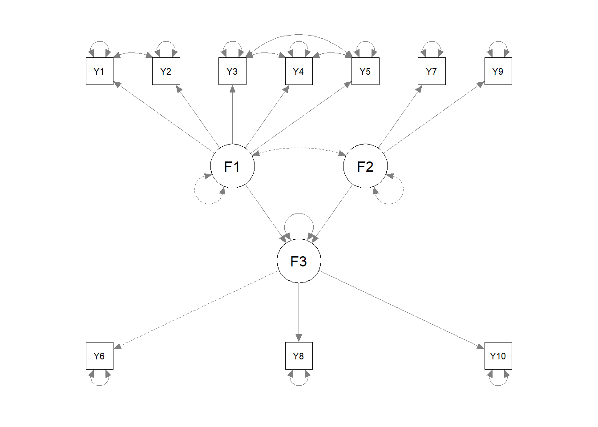
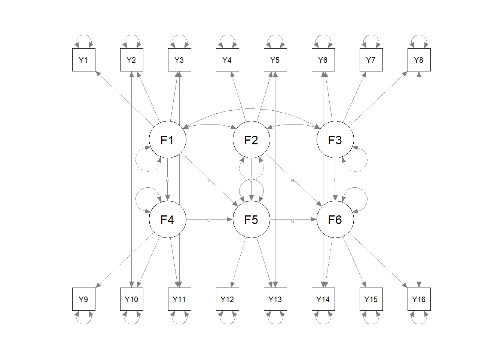

Chapter 5 Full Structural Equation Models
5.1 Syntax - R
5.1.1 One-step SEM
JOBENR.corr <- '
1.00
.71 1.00
.62 .66 1.00
.44 .50 .71 1.00
.59 .70 .68 .62 1.00
.61 .58 .60 .48 .54 1.00
-.27 -.21 -.28 -.26 -.21 -.47 1.00
.53 .50 .40 .37 .39 .67 -.36 1.00
-.16 -.15 -.21 -.20 -.14 -.31 .65 -.17 1.00
.58 .58 .54 .50 .56 .78 -.44 .60 -.33 1.00'
JOBENR.SDs <- c(1.00, .92, .87, .85, .99, .99, 1.23, .98, 1.08, .98)
SEM.management.cov <- getCov(JOBENR.corr, sds = JOBENR.SDs, names = paste("Y", 1:10, sep=""))
SEM.management.model <-
paste0('F1 =~ NA*Y1 + ', paste0('Y', 2:5, collapse=' + '), ' \n',
' F2 =~ NA*Y7 + Y9', ' \n',
' F3 =~ Y6 + Y8 + Y10', ' \n',
' F1 ~~ 1*F1', ' \n',
' F2 ~~ 1*F2', ' \n',
' Y1 ~~ Y2', ' \n',
' Y3 ~~ Y4', ' \n',
' Y3 ~~ Y5', ' \n',
' Y4 ~~ Y5', ' \n',
' F3 ~ F1 + F2', ' \n',
'F1 ~~ 0*F2')
SEM.management.fit <- sem(SEM.management.model, sample.cov = SEM.management.cov, sample.nobs = 114)
summary(SEM.management.fit, fit.measures = TRUE, standardized = TRUE, rsquare = TRUE)## lavaan 0.6-8 ended normally after 39 iterations
##
## Estimator ML
## Optimization method NLMINB
## Number of model parameters 26
##
## Number of observations 114
##
## Model Test User Model:
##
## Test statistic 32.232
## Degrees of freedom 29
## P-value (Chi-square) 0.310
##
## Model Test Baseline Model:
##
## Test statistic 713.751
## Degrees of freedom 45
## P-value 0.000
##
## User Model versus Baseline Model:
##
## Comparative Fit Index (CFI) 0.995
## Tucker-Lewis Index (TLI) 0.992
##
## Loglikelihood and Information Criteria:
##
## Loglikelihood user model (H0) -1253.375
## Loglikelihood unrestricted model (H1) -1237.259
##
## Akaike (AIC) 2558.751
## Bayesian (BIC) 2629.892
## Sample-size adjusted Bayesian (BIC) 2547.715
##
## Root Mean Square Error of Approximation:
##
## RMSEA 0.031
## 90 Percent confidence interval - lower 0.000
## 90 Percent confidence interval - upper 0.080
## P-value RMSEA <= 0.05 0.680
##
## Standardized Root Mean Square Residual:
##
## SRMR 0.114
##
## Parameter Estimates:
##
## Standard errors Standard
## Information Expected
## Information saturated (h1) model Structured
##
## Latent Variables:
## Estimate Std.Err z-value P(>|z|) Std.lv Std.all
## F1 =~
## Y1 0.803 0.085 9.444 0.000 0.803 0.806
## Y2 0.797 0.075 10.670 0.000 0.797 0.870
## Y3 0.664 0.074 9.018 0.000 0.664 0.766
## Y4 0.493 0.078 6.319 0.000 0.493 0.582
## Y5 0.765 0.083 9.185 0.000 0.765 0.776
## F2 =~
## Y7 1.216 0.155 7.843 0.000 1.216 0.993
## Y9 0.704 0.117 5.992 0.000 0.704 0.654
## F3 =~
## Y6 1.000 0.844 0.902
## Y8 0.783 0.091 8.594 0.000 0.661 0.699
## Y10 0.929 0.082 11.295 0.000 0.784 0.841
##
## Regressions:
## Estimate Std.Err z-value P(>|z|) Std.lv Std.all
## F3 ~
## F1 0.624 0.074 8.387 0.000 0.739 0.739
## F2 -0.305 0.070 -4.381 0.000 -0.362 -0.362
##
## Covariances:
## Estimate Std.Err z-value P(>|z|) Std.lv Std.all
## .Y1 ~~
## .Y2 0.008 0.053 0.144 0.886 0.008 0.029
## .Y3 ~~
## .Y4 0.194 0.050 3.857 0.000 0.194 0.505
## .Y5 0.073 0.050 1.473 0.141 0.073 0.211
## .Y4 ~~
## .Y5 0.140 0.054 2.617 0.009 0.140 0.328
## F1 ~~
## F2 0.000 0.000 0.000
##
## Variances:
## Estimate Std.Err z-value P(>|z|) Std.lv Std.all
## F1 1.000 1.000 1.000
## F2 1.000 1.000 1.000
## .Y1 0.347 0.075 4.629 0.000 0.347 0.350
## .Y2 0.204 0.057 3.555 0.000 0.204 0.243
## .Y3 0.310 0.055 5.628 0.000 0.310 0.413
## .Y4 0.473 0.069 6.856 0.000 0.473 0.661
## .Y5 0.386 0.070 5.513 0.000 0.386 0.398
## .Y7 0.020 0.321 0.062 0.950 0.020 0.013
## .Y9 0.661 0.139 4.772 0.000 0.661 0.572
## .Y6 0.163 0.044 3.735 0.000 0.163 0.186
## .Y8 0.456 0.068 6.737 0.000 0.456 0.511
## .Y10 0.255 0.048 5.313 0.000 0.255 0.293
## .F3 0.230 0.060 3.845 0.000 0.323 0.323
##
## R-Square:
## Estimate
## Y1 0.650
## Y2 0.757
## Y3 0.587
## Y4 0.339
## Y5 0.602
## Y7 0.987
## Y9 0.428
## Y6 0.814
## Y8 0.489
## Y10 0.707
## F3 0.677
5.1.2 Two-step SEM process
5.1.2.1 measurement phase
DANDS.lower <- '
6.052
3.516 3.098
5.52 3.626 7.508
1.676 1.235 1.274 4.162
0.927 0.352 0.823 1.577 4.537
3.84 2.899 4.56 2.114 2.5 18.49
1.117 0.863 1.432 1.109 1.574 3.636 3.61
1.136 0.98 1.218 0.45 0.389 1.814 1.242 3.61
4.348 2.851 4.475 1.486 0.767 5.18 1.574 1.229 6.917
2.157 2.062 2.662 0.821 0.696 3.495 1.39 0.474 3.38 3.572
4.276 3.199 5.595 1.112 0.544 6.216 1.813 1.241 6.117 3.628 8.066
1.905 1.61 1.988 2.077 1.311 4.115 1.325 1.138 2.745 1.747 2.731 5.476
1.167 0.855 1.779 1.477 3.244 4.129 1.441 1.061 1.839 1.15 1.805 3.044 5.153
3.563 3.062 4.807 1.695 2.402 16.53 2.641 0.526 5.535 3.555 6.584 4.424 4.909 23.62
2.022 1.419 2.777 0.716 1.739 7.286 2.32 1.349 3.274 2.041 3.46 3.448 3.104 7.123 7.076
0.267 0.294 0.489 0.356 0.831 1.026 0.91 1.485 0.898 0.279 0.722 1.444 0.938 0.528 1.765 3.764'
SEM.2step.cov <- getCov(DANDS.lower, names = paste("Y", 1:16, sep=""))
SEM.2step.initial.measurement.model <- '
F1 =~ NA*Y1 + Y2 +Y3
F2 =~ NA*Y4 + Y5
F3 =~ NA*Y6 + Y7 + Y8
F4 =~ Y9 + Y10 + Y11
F5 =~ Y12 + Y13
F6 =~ Y14 + Y15 + Y16
F1 ~~ 1*F1
F2 ~~ 1*F2
F3 ~~ 1*F3'
SEM.2step.initial.measurement.fit <- cfa(SEM.2step.initial.measurement.model, sample.cov = SEM.2step.cov, sample.nobs = 84)## Warning in lav_object_post_check(object): lavaan WARNING: covariance matrix of latent variables
## is not positive definite;
## use lavInspect(fit, "cov.lv") to investigate.summary(SEM.2step.initial.measurement.fit, fit.measures = TRUE, standardized = TRUE, rsquare = TRUE)## lavaan 0.6-8 ended normally after 104 iterations
##
## Estimator ML
## Optimization method NLMINB
## Number of model parameters 47
##
## Number of observations 84
##
## Model Test User Model:
##
## Test statistic 182.555
## Degrees of freedom 89
## P-value (Chi-square) 0.000
##
## Model Test Baseline Model:
##
## Test statistic 904.019
## Degrees of freedom 120
## P-value 0.000
##
## User Model versus Baseline Model:
##
## Comparative Fit Index (CFI) 0.881
## Tucker-Lewis Index (TLI) 0.839
##
## Loglikelihood and Information Criteria:
##
## Loglikelihood user model (H0) -2733.133
## Loglikelihood unrestricted model (H1) -2641.855
##
## Akaike (AIC) 5560.265
## Bayesian (BIC) 5674.513
## Sample-size adjusted Bayesian (BIC) 5526.251
##
## Root Mean Square Error of Approximation:
##
## RMSEA 0.112
## 90 Percent confidence interval - lower 0.089
## 90 Percent confidence interval - upper 0.135
## P-value RMSEA <= 0.05 0.000
##
## Standardized Root Mean Square Residual:
##
## SRMR 0.090
##
## Parameter Estimates:
##
## Standard errors Standard
## Information Expected
## Information saturated (h1) model Structured
##
## Latent Variables:
## Estimate Std.Err z-value P(>|z|) Std.lv Std.all
## F1 =~
## Y1 2.254 0.207 10.872 0.000 2.254 0.922
## Y2 1.525 0.154 9.921 0.000 1.525 0.872
## Y3 2.408 0.237 10.147 0.000 2.408 0.884
## F2 =~
## Y4 1.000 0.233 4.284 0.000 1.000 0.493
## Y5 1.558 0.258 6.029 0.000 1.558 0.736
## F3 =~
## Y6 3.810 0.421 9.040 0.000 3.810 0.891
## Y7 0.970 0.201 4.826 0.000 0.970 0.513
## Y8 0.474 0.213 2.229 0.026 0.474 0.251
## F4 =~
## Y9 1.000 2.345 0.897
## Y10 0.598 0.071 8.468 0.000 1.401 0.746
## Y11 1.101 0.091 12.162 0.000 2.581 0.914
## F5 =~
## Y12 1.000 1.520 0.653
## Y13 1.302 0.212 6.140 0.000 1.979 0.877
## F6 =~
## Y14 1.000 3.721 0.770
## Y15 0.514 0.070 7.318 0.000 1.913 0.723
## Y16 0.110 0.056 1.984 0.047 0.411 0.213
##
## Covariances:
## Estimate Std.Err z-value P(>|z|) Std.lv Std.all
## F1 ~~
## F2 0.320 0.138 2.310 0.021 0.320 0.320
## F3 0.486 0.103 4.708 0.000 0.486 0.486
## F4 1.859 0.248 7.494 0.000 0.793 0.793
## F5 0.529 0.200 2.642 0.008 0.348 0.348
## F6 1.822 0.485 3.754 0.000 0.490 0.490
## F2 ~~
## F3 0.498 0.140 3.559 0.000 0.498 0.498
## F4 0.602 0.344 1.749 0.080 0.257 0.257
## F5 1.411 0.287 4.907 0.000 0.928 0.928
## F6 1.787 0.613 2.916 0.004 0.480 0.480
## F3 ~~
## F4 1.463 0.283 5.165 0.000 0.624 0.624
## F5 0.907 0.228 3.984 0.000 0.597 0.597
## F6 3.953 0.492 8.031 0.000 1.062 1.062
## F4 ~~
## F5 1.563 0.533 2.933 0.003 0.439 0.439
## F6 5.945 1.414 4.206 0.000 0.681 0.681
## F5 ~~
## F6 4.382 1.137 3.854 0.000 0.775 0.775
##
## Variances:
## Estimate Std.Err z-value P(>|z|) Std.lv Std.all
## F1 1.000 1.000 1.000
## F2 1.000 1.000 1.000
## F3 1.000 1.000 1.000
## .Y1 0.899 0.247 3.646 0.000 0.899 0.150
## .Y2 0.734 0.150 4.881 0.000 0.734 0.240
## .Y3 1.619 0.348 4.652 0.000 1.619 0.218
## .Y4 3.113 0.526 5.918 0.000 3.113 0.757
## .Y5 2.055 0.609 3.371 0.001 2.055 0.458
## .Y6 3.754 1.742 2.155 0.031 3.754 0.205
## .Y7 2.627 0.421 6.235 0.000 2.627 0.736
## .Y8 3.342 0.519 6.436 0.000 3.342 0.937
## .Y9 1.337 0.325 4.119 0.000 1.337 0.196
## .Y10 1.566 0.269 5.817 0.000 1.566 0.444
## .Y11 1.307 0.361 3.618 0.000 1.307 0.164
## .Y12 3.101 0.540 5.741 0.000 3.101 0.573
## .Y13 1.176 0.462 2.546 0.011 1.176 0.231
## .Y14 9.492 1.845 5.145 0.000 9.492 0.407
## .Y15 3.333 0.593 5.616 0.000 3.333 0.477
## .Y16 3.551 0.548 6.484 0.000 3.551 0.955
## F4 5.498 1.064 5.166 0.000 1.000 1.000
## F5 2.310 0.729 3.170 0.002 1.000 1.000
## F6 13.847 3.476 3.984 0.000 1.000 1.000
##
## R-Square:
## Estimate
## Y1 0.850
## Y2 0.760
## Y3 0.782
## Y4 0.243
## Y5 0.542
## Y6 0.795
## Y7 0.264
## Y8 0.063
## Y9 0.804
## Y10 0.556
## Y11 0.836
## Y12 0.427
## Y13 0.769
## Y14 0.593
## Y15 0.523
## Y16 0.045## Warning in lav_start_check_cov(lavpartable = lavpartable, start = START): lavaan WARNING: starting values imply a correlation larger than 1;
## variables involved are: F3 F6## lhs op rhs mi epc sepc.lv sepc.all sepc.nox
## 19 F3 ~~ F3 10.051 -0.507 -1.000 -1.000 -1.000
## 54 F1 =~ Y4 4.965 0.536 0.536 0.264 0.264
## 55 F1 =~ Y5 4.784 -0.808 -0.808 -0.381 -0.381
## 62 F1 =~ Y12 5.071 0.547 0.547 0.235 0.235
## 63 F1 =~ Y13 5.100 -0.714 -0.714 -0.316 -0.316
## 70 F2 =~ Y6 4.694 -1.262 -1.262 -0.295 -0.295
## 76 F2 =~ Y12 5.074 -1.509 -1.509 -0.649 -0.649
## 90 F3 =~ Y13 11.032 -1.664 -1.664 -0.738 -0.738
## 91 F3 =~ Y14 5.288 2.325 2.325 0.481 0.481
## 94 F4 =~ Y1 4.837 -0.288 -0.675 -0.276 -0.276
## 102 F4 =~ Y12 8.416 0.320 0.749 0.322 0.322
## 103 F4 =~ Y13 8.706 -0.423 -0.991 -0.439 -0.439
## 132 F6 =~ Y12 5.926 0.253 0.942 0.405 0.405
## 133 F6 =~ Y13 11.778 -0.493 -1.833 -0.812 -0.812
## 141 Y1 ~~ Y9 11.880 0.652 0.652 0.595 0.595
## 142 Y1 ~~ Y10 5.623 -0.413 -0.413 -0.348 -0.348
## 143 Y1 ~~ Y11 6.912 -0.523 -0.523 -0.483 -0.483
## 156 Y2 ~~ Y10 11.050 0.462 0.462 0.431 0.431
## 168 Y3 ~~ Y9 6.384 -0.570 -0.570 -0.387 -0.387
## 170 Y3 ~~ Y11 12.585 0.839 0.839 0.577 0.577
## 183 Y4 ~~ Y12 8.591 1.177 1.177 0.379 0.379
## 184 Y4 ~~ Y13 9.399 -1.324 -1.324 -0.692 -0.692
## 189 Y5 ~~ Y7 4.772 0.652 0.652 0.281 0.281
## 194 Y5 ~~ Y12 19.259 -1.973 -1.973 -0.782 -0.782
## 195 Y5 ~~ Y13 21.558 2.376 2.376 1.528 1.528
## 199 Y6 ~~ Y7 4.655 -2.193 -2.193 -0.698 -0.698
## 206 Y6 ~~ Y14 28.717 6.508 6.508 1.090 1.090
## 209 Y7 ~~ Y8 5.098 0.757 0.757 0.256 0.256
## 215 Y7 ~~ Y14 5.504 -1.525 -1.525 -0.305 -0.305
## 223 Y8 ~~ Y14 9.082 -2.069 -2.069 -0.367 -0.367
## 225 Y8 ~~ Y16 11.007 1.257 1.257 0.365 0.365
## 251 Y14 ~~ Y15 6.442 -3.986 -3.986 -0.709 -0.709
## 252 Y14 ~~ Y16 4.936 -1.580 -1.580 -0.272 -0.272
## 253 Y15 ~~ Y16 5.433 0.952 0.952 0.277 0.277SEM.2step.measurement.model2.fit <- update(SEM.2step.initial.measurement.fit, model = c(SEM.2step.initial.measurement.model,
'Y6 ~~ Y14'))## Warning in lav_object_post_check(object): lavaan WARNING: covariance matrix of latent variables
## is not positive definite;
## use lavInspect(fit, "cov.lv") to investigate.summary(SEM.2step.measurement.model2.fit, fit.measures = TRUE, standardized = TRUE, rsquare = TRUE, modindices = TRUE)## lavaan 0.6-8 ended normally after 104 iterations
##
## Estimator ML
## Optimization method NLMINB
## Number of model parameters 48
##
## Number of observations 84
##
## Model Test User Model:
##
## Test statistic 158.511
## Degrees of freedom 88
## P-value (Chi-square) 0.000
##
## Model Test Baseline Model:
##
## Test statistic 904.019
## Degrees of freedom 120
## P-value 0.000
##
## User Model versus Baseline Model:
##
## Comparative Fit Index (CFI) 0.910
## Tucker-Lewis Index (TLI) 0.877
##
## Loglikelihood and Information Criteria:
##
## Loglikelihood user model (H0) -2721.110
## Loglikelihood unrestricted model (H1) -2641.855
##
## Akaike (AIC) 5538.221
## Bayesian (BIC) 5654.900
## Sample-size adjusted Bayesian (BIC) 5503.483
##
## Root Mean Square Error of Approximation:
##
## RMSEA 0.098
## 90 Percent confidence interval - lower 0.073
## 90 Percent confidence interval - upper 0.122
## P-value RMSEA <= 0.05 0.002
##
## Standardized Root Mean Square Residual:
##
## SRMR 0.077
##
## Parameter Estimates:
##
## Standard errors Standard
## Information Expected
## Information saturated (h1) model Structured
##
## Latent Variables:
## Estimate Std.Err z-value P(>|z|) Std.lv Std.all
## F1 =~
## Y1 2.256 0.207 10.884 0.000 2.256 0.922
## Y2 1.525 0.154 9.922 0.000 1.525 0.872
## Y3 2.407 0.237 10.136 0.000 2.407 0.884
## F2 =~
## Y4 1.024 0.234 4.369 0.000 1.024 0.505
## Y5 1.522 0.258 5.905 0.000 1.522 0.719
## F3 =~
## Y6 3.307 0.438 7.557 0.000 3.307 0.771
## Y7 1.201 0.203 5.923 0.000 1.201 0.636
## Y8 0.761 0.217 3.504 0.000 0.761 0.403
## F4 =~
## Y9 1.000 2.353 0.900
## Y10 0.596 0.070 8.511 0.000 1.403 0.747
## Y11 1.093 0.090 12.145 0.000 2.571 0.911
## F5 =~
## Y12 1.000 1.563 0.672
## Y13 1.231 0.193 6.371 0.000 1.924 0.853
## F6 =~
## Y14 1.000 2.972 0.620
## Y15 0.745 0.133 5.606 0.000 2.215 0.838
## Y16 0.230 0.080 2.887 0.004 0.683 0.354
##
## Covariances:
## Estimate Std.Err z-value P(>|z|) Std.lv Std.all
## .Y6 ~~
## .Y14 7.300 1.774 4.116 0.000 7.300 0.711
## F1 ~~
## F2 0.333 0.139 2.389 0.017 0.333 0.333
## F3 0.482 0.106 4.565 0.000 0.482 0.482
## F4 1.865 0.248 7.520 0.000 0.793 0.793
## F5 0.571 0.207 2.758 0.006 0.365 0.365
## F6 1.376 0.417 3.300 0.001 0.463 0.463
## F2 ~~
## F3 0.568 0.140 4.063 0.000 0.568 0.568
## F4 0.632 0.349 1.809 0.070 0.269 0.269
## F5 1.471 0.289 5.091 0.000 0.941 0.941
## F6 1.521 0.519 2.930 0.003 0.512 0.512
## F3 ~~
## F4 1.445 0.286 5.057 0.000 0.614 0.614
## F5 1.016 0.235 4.314 0.000 0.650 0.650
## F6 2.713 0.524 5.173 0.000 0.913 0.913
## F4 ~~
## F5 1.700 0.556 3.057 0.002 0.462 0.462
## F6 4.526 1.237 3.658 0.000 0.647 0.647
## F5 ~~
## F6 3.740 1.037 3.606 0.000 0.805 0.805
##
## Variances:
## Estimate Std.Err z-value P(>|z|) Std.lv Std.all
## F1 1.000 1.000 1.000
## F2 1.000 1.000 1.000
## F3 1.000 1.000 1.000
## .Y1 0.892 0.246 3.627 0.000 0.892 0.149
## .Y2 0.734 0.150 4.882 0.000 0.734 0.240
## .Y3 1.627 0.349 4.666 0.000 1.627 0.219
## .Y4 3.065 0.524 5.849 0.000 3.065 0.745
## .Y5 2.165 0.601 3.604 0.000 2.165 0.483
## .Y6 7.472 1.822 4.101 0.000 7.472 0.406
## .Y7 2.125 0.386 5.502 0.000 2.125 0.596
## .Y8 2.988 0.481 6.210 0.000 2.988 0.838
## .Y9 1.297 0.323 4.020 0.000 1.297 0.190
## .Y10 1.561 0.269 5.809 0.000 1.561 0.442
## .Y11 1.359 0.366 3.717 0.000 1.359 0.170
## .Y12 2.967 0.525 5.647 0.000 2.967 0.548
## .Y13 1.389 0.446 3.118 0.002 1.389 0.273
## .Y14 14.125 2.455 5.753 0.000 14.125 0.615
## .Y15 2.086 0.646 3.228 0.001 2.086 0.298
## .Y16 3.253 0.514 6.330 0.000 3.253 0.875
## F4 5.538 1.066 5.196 0.000 1.000 1.000
## F5 2.444 0.744 3.283 0.001 1.000 1.000
## F6 8.832 2.999 2.945 0.003 1.000 1.000
##
## R-Square:
## Estimate
## Y1 0.851
## Y2 0.760
## Y3 0.781
## Y4 0.255
## Y5 0.517
## Y6 0.594
## Y7 0.404
## Y8 0.162
## Y9 0.810
## Y10 0.558
## Y11 0.830
## Y12 0.452
## Y13 0.727
## Y14 0.385
## Y15 0.702
## Y16 0.125
##
## Modification Indices:
##
## lhs op rhs mi epc sepc.lv sepc.all sepc.nox
## 55 F1 =~ Y4 4.735 0.533 0.533 0.263 0.263
## 56 F1 =~ Y5 4.735 -0.793 -0.793 -0.375 -0.375
## 57 F1 =~ Y6 0.063 -0.145 -0.145 -0.034 -0.034
## 58 F1 =~ Y7 0.084 -0.066 -0.066 -0.035 -0.035
## 59 F1 =~ Y8 0.889 0.229 0.229 0.121 0.121
## 60 F1 =~ Y9 0.016 0.047 0.047 0.018 0.018
## 61 F1 =~ Y10 0.078 -0.080 -0.080 -0.043 -0.043
## 62 F1 =~ Y11 0.007 0.034 0.034 0.012 0.012
## 63 F1 =~ Y12 4.406 0.519 0.519 0.223 0.223
## 64 F1 =~ Y13 4.406 -0.639 -0.639 -0.283 -0.283
## 65 F1 =~ Y14 1.902 0.726 0.726 0.152 0.152
## 66 F1 =~ Y15 0.776 -0.328 -0.328 -0.124 -0.124
## 67 F1 =~ Y16 0.831 -0.223 -0.223 -0.116 -0.116
## 68 F2 =~ Y1 0.002 0.006 0.006 0.003 0.003
## 69 F2 =~ Y2 0.006 -0.010 -0.010 -0.006 -0.006
## 70 F2 =~ Y3 0.001 0.006 0.006 0.002 0.002
## 71 F2 =~ Y6 1.186 -0.709 -0.709 -0.165 -0.165
## 72 F2 =~ Y7 0.748 0.223 0.223 0.118 0.118
## 73 F2 =~ Y8 0.298 0.151 0.151 0.080 0.080
## 74 F2 =~ Y9 0.211 0.090 0.090 0.034 0.034
## 75 F2 =~ Y10 0.606 0.133 0.133 0.071 0.071
## 76 F2 =~ Y11 0.957 -0.206 -0.206 -0.073 -0.073
## 77 F2 =~ Y12 4.068 -1.256 -1.256 -0.540 -0.540
## 78 F2 =~ Y13 4.068 1.547 1.547 0.685 0.685
## 79 F2 =~ Y14 0.597 0.523 0.523 0.109 0.109
## 80 F2 =~ Y15 0.935 -0.470 -0.470 -0.178 -0.178
## 81 F2 =~ Y16 0.197 0.132 0.132 0.069 0.069
## 82 F3 =~ Y1 0.924 -0.183 -0.183 -0.075 -0.075
## 83 F3 =~ Y2 0.027 0.024 0.024 0.014 0.014
## 84 F3 =~ Y3 0.792 0.197 0.197 0.072 0.072
## 85 F3 =~ Y4 0.084 0.091 0.091 0.045 0.045
## 86 F3 =~ Y5 0.084 -0.136 -0.136 -0.064 -0.064
## 87 F3 =~ Y9 0.100 -0.082 -0.082 -0.031 -0.031
## 88 F3 =~ Y10 0.695 0.186 0.186 0.099 0.099
## 89 F3 =~ Y11 0.066 -0.071 -0.071 -0.025 -0.025
## 90 F3 =~ Y12 4.826 0.856 0.856 0.368 0.368
## 91 F3 =~ Y13 4.826 -1.054 -1.054 -0.467 -0.467
## 92 F3 =~ Y14 0.195 -0.806 -0.806 -0.168 -0.168
## 93 F3 =~ Y15 0.072 0.327 0.327 0.124 0.124
## 94 F3 =~ Y16 0.059 0.173 0.173 0.090 0.090
## 95 F4 =~ Y1 4.581 -0.279 -0.658 -0.269 -0.269
## 96 F4 =~ Y2 0.493 0.066 0.156 0.089 0.089
## 97 F4 =~ Y3 2.424 0.227 0.535 0.196 0.196
## 98 F4 =~ Y4 2.490 0.163 0.383 0.189 0.189
## 99 F4 =~ Y5 2.490 -0.242 -0.570 -0.269 -0.269
## 100 F4 =~ Y6 0.038 0.058 0.137 0.032 0.032
## 101 F4 =~ Y7 0.136 -0.043 -0.101 -0.053 -0.053
## 102 F4 =~ Y8 0.066 0.031 0.073 0.038 0.038
## 103 F4 =~ Y12 7.674 0.311 0.732 0.315 0.315
## 104 F4 =~ Y13 7.674 -0.383 -0.901 -0.399 -0.399
## 105 F4 =~ Y14 2.824 0.469 1.104 0.230 0.230
## 106 F4 =~ Y15 1.288 -0.225 -0.529 -0.200 -0.200
## 107 F4 =~ Y16 0.932 -0.122 -0.288 -0.149 -0.149
## 108 F5 =~ Y1 0.522 -0.077 -0.121 -0.049 -0.049
## 109 F5 =~ Y2 0.000 0.000 0.000 0.000 0.000
## 110 F5 =~ Y3 0.627 0.099 0.155 0.057 0.057
## 111 F5 =~ Y4 0.869 -0.339 -0.530 -0.261 -0.261
## 112 F5 =~ Y5 0.869 0.504 0.788 0.372 0.372
## 113 F5 =~ Y6 0.379 -0.343 -0.537 -0.125 -0.125
## 114 F5 =~ Y7 0.596 0.165 0.258 0.137 0.137
## 115 F5 =~ Y8 0.036 -0.039 -0.062 -0.033 -0.033
## 116 F5 =~ Y9 0.372 0.080 0.125 0.048 0.048
## 117 F5 =~ Y10 0.494 0.082 0.128 0.068 0.068
## 118 F5 =~ Y11 1.146 -0.152 -0.237 -0.084 -0.084
## 119 F5 =~ Y14 1.146 0.614 0.960 0.200 0.200
## 120 F5 =~ Y15 1.553 -0.501 -0.783 -0.296 -0.296
## 121 F5 =~ Y16 0.243 0.126 0.196 0.102 0.102
## 122 F6 =~ Y1 2.575 -0.098 -0.292 -0.120 -0.120
## 123 F6 =~ Y2 0.086 0.014 0.041 0.023 0.023
## 124 F6 =~ Y3 2.148 0.105 0.311 0.114 0.114
## 125 F6 =~ Y4 0.039 -0.022 -0.065 -0.032 -0.032
## 126 F6 =~ Y5 0.039 0.032 0.096 0.045 0.045
## 127 F6 =~ Y6 2.194 0.998 2.967 0.692 0.692
## 128 F6 =~ Y7 2.552 -0.400 -1.189 -0.629 -0.629
## 129 F6 =~ Y8 0.015 0.028 0.084 0.044 0.044
## 130 F6 =~ Y9 0.007 -0.007 -0.022 -0.008 -0.008
## 131 F6 =~ Y10 0.327 0.043 0.128 0.068 0.068
## 132 F6 =~ Y11 0.093 -0.029 -0.085 -0.030 -0.030
## 133 F6 =~ Y12 8.068 0.413 1.228 0.528 0.528
## 134 F6 =~ Y13 8.068 -0.509 -1.512 -0.670 -0.670
## 135 Y1 ~~ Y2 0.948 0.222 0.222 0.275 0.275
## 136 Y1 ~~ Y3 0.304 0.202 0.202 0.168 0.168
## 137 Y1 ~~ Y4 1.290 0.273 0.273 0.165 0.165
## 138 Y1 ~~ Y5 1.272 0.254 0.254 0.183 0.183
## 139 Y1 ~~ Y6 0.232 0.152 0.152 0.059 0.059
## 140 Y1 ~~ Y7 0.346 -0.121 -0.121 -0.088 -0.088
## 141 Y1 ~~ Y8 0.030 0.040 0.040 0.024 0.024
## 142 Y1 ~~ Y9 11.744 0.646 0.646 0.600 0.600
## 143 Y1 ~~ Y10 5.943 -0.424 -0.424 -0.359 -0.359
## 144 Y1 ~~ Y11 6.961 -0.529 -0.529 -0.480 -0.480
## 145 Y1 ~~ Y12 0.007 -0.020 -0.020 -0.012 -0.012
## 146 Y1 ~~ Y13 1.389 -0.234 -0.234 -0.210 -0.210
## 147 Y1 ~~ Y14 0.716 -0.324 -0.324 -0.091 -0.091
## 148 Y1 ~~ Y15 0.070 0.064 0.064 0.047 0.047
## 149 Y1 ~~ Y16 0.173 -0.099 -0.099 -0.058 -0.058
## 150 Y2 ~~ Y3 2.116 -0.340 -0.340 -0.311 -0.311
## 151 Y2 ~~ Y4 2.284 0.289 0.289 0.193 0.193
## 152 Y2 ~~ Y5 2.895 -0.299 -0.299 -0.237 -0.237
## 153 Y2 ~~ Y6 0.026 -0.040 -0.040 -0.017 -0.017
## 154 Y2 ~~ Y7 0.004 0.010 0.010 0.008 0.008
## 155 Y2 ~~ Y8 1.824 0.251 0.251 0.169 0.169
## 156 Y2 ~~ Y9 1.767 -0.197 -0.197 -0.202 -0.202
## 157 Y2 ~~ Y10 11.284 0.467 0.467 0.436 0.436
## 158 Y2 ~~ Y11 0.106 -0.051 -0.051 -0.051 -0.051
## 159 Y2 ~~ Y12 3.797 0.376 0.376 0.254 0.254
## 160 Y2 ~~ Y13 0.478 -0.108 -0.108 -0.107 -0.107
## 161 Y2 ~~ Y14 0.539 0.222 0.222 0.069 0.069
## 162 Y2 ~~ Y15 1.370 -0.220 -0.220 -0.178 -0.178
## 163 Y2 ~~ Y16 0.011 0.020 0.020 0.013 0.013
## 164 Y3 ~~ Y4 2.840 -0.489 -0.489 -0.219 -0.219
## 165 Y3 ~~ Y5 0.071 -0.071 -0.071 -0.038 -0.038
## 166 Y3 ~~ Y6 0.175 -0.157 -0.157 -0.045 -0.045
## 167 Y3 ~~ Y7 0.001 0.009 0.009 0.005 0.005
## 168 Y3 ~~ Y8 0.121 -0.098 -0.098 -0.044 -0.044
## 169 Y3 ~~ Y9 6.610 -0.578 -0.578 -0.398 -0.398
## 170 Y3 ~~ Y10 0.765 -0.184 -0.184 -0.116 -0.116
## 171 Y3 ~~ Y11 12.478 0.843 0.843 0.567 0.567
## 172 Y3 ~~ Y12 1.672 -0.378 -0.378 -0.172 -0.172
## 173 Y3 ~~ Y13 2.760 0.393 0.393 0.261 0.261
## 174 Y3 ~~ Y14 0.148 0.176 0.176 0.037 0.037
## 175 Y3 ~~ Y15 0.731 0.244 0.244 0.133 0.133
## 176 Y3 ~~ Y16 0.010 -0.029 -0.029 -0.013 -0.013
## 178 Y4 ~~ Y6 0.019 0.069 0.069 0.014 0.014
## 179 Y4 ~~ Y7 1.180 0.338 0.338 0.132 0.132
## 180 Y4 ~~ Y8 0.092 -0.106 -0.106 -0.035 -0.035
## 181 Y4 ~~ Y9 1.747 0.365 0.365 0.183 0.183
## 182 Y4 ~~ Y10 0.001 0.007 0.007 0.003 0.003
## 183 Y4 ~~ Y11 0.690 -0.244 -0.244 -0.119 -0.119
## 184 Y4 ~~ Y12 7.966 1.140 1.140 0.378 0.378
## 185 Y4 ~~ Y13 7.452 -1.167 -1.167 -0.566 -0.566
## 186 Y4 ~~ Y14 0.005 0.044 0.044 0.007 0.007
## 187 Y4 ~~ Y15 3.009 -0.646 -0.646 -0.256 -0.256
## 188 Y4 ~~ Y16 0.023 -0.055 -0.055 -0.017 -0.017
## 189 Y5 ~~ Y6 2.178 -0.873 -0.873 -0.217 -0.217
## 190 Y5 ~~ Y7 4.723 0.636 0.636 0.296 0.296
## 191 Y5 ~~ Y8 2.309 -0.483 -0.483 -0.190 -0.190
## 192 Y5 ~~ Y9 0.001 0.010 0.010 0.006 0.006
## 193 Y5 ~~ Y10 0.702 0.198 0.198 0.108 0.108
## 194 Y5 ~~ Y11 0.766 -0.244 -0.244 -0.142 -0.142
## 195 Y5 ~~ Y12 22.726 -2.133 -2.133 -0.841 -0.841
## 196 Y5 ~~ Y13 21.162 2.317 2.317 1.336 1.336
## 197 Y5 ~~ Y14 0.543 0.464 0.464 0.084 0.084
## 198 Y5 ~~ Y15 0.118 0.142 0.142 0.067 0.067
## 199 Y5 ~~ Y16 0.578 0.250 0.250 0.094 0.094
## 200 Y6 ~~ Y7 1.229 -0.907 -0.907 -0.228 -0.228
## 201 Y6 ~~ Y8 0.106 0.167 0.167 0.035 0.035
## 202 Y6 ~~ Y9 0.603 -0.282 -0.282 -0.091 -0.091
## 203 Y6 ~~ Y10 0.002 0.015 0.015 0.005 0.005
## 204 Y6 ~~ Y11 0.463 0.265 0.265 0.083 0.083
## 205 Y6 ~~ Y12 0.224 0.232 0.232 0.049 0.049
## 206 Y6 ~~ Y13 0.004 -0.032 -0.032 -0.010 -0.010
## 207 Y6 ~~ Y15 3.002 1.478 1.478 0.374 0.374
## 208 Y6 ~~ Y16 1.215 -0.520 -0.520 -0.105 -0.105
## 209 Y7 ~~ Y8 1.637 0.395 0.395 0.157 0.157
## 210 Y7 ~~ Y9 0.304 -0.130 -0.130 -0.078 -0.078
## 211 Y7 ~~ Y10 2.934 0.382 0.382 0.210 0.210
## 212 Y7 ~~ Y11 0.000 0.002 0.002 0.001 0.001
## 213 Y7 ~~ Y12 1.002 -0.312 -0.312 -0.124 -0.124
## 214 Y7 ~~ Y13 0.526 -0.187 -0.187 -0.109 -0.109
## 215 Y7 ~~ Y14 0.118 -0.225 -0.225 -0.041 -0.041
## 216 Y7 ~~ Y15 0.023 -0.056 -0.056 -0.027 -0.027
## 217 Y7 ~~ Y16 0.428 0.205 0.205 0.078 0.078
## 218 Y8 ~~ Y9 0.093 0.081 0.081 0.041 0.041
## 219 Y8 ~~ Y10 1.678 -0.326 -0.326 -0.151 -0.151
## 220 Y8 ~~ Y11 0.075 -0.077 -0.077 -0.038 -0.038
## 221 Y8 ~~ Y12 0.593 0.270 0.270 0.091 0.091
## 222 Y8 ~~ Y13 1.224 0.312 0.312 0.153 0.153
## 223 Y8 ~~ Y14 3.871 -1.146 -1.146 -0.176 -0.176
## 224 Y8 ~~ Y15 1.189 -0.394 -0.394 -0.158 -0.158
## 225 Y8 ~~ Y16 8.820 1.043 1.043 0.335 0.335
## 226 Y9 ~~ Y10 0.144 0.092 0.092 0.064 0.064
## 227 Y9 ~~ Y11 0.025 -0.078 -0.078 -0.059 -0.059
## 228 Y9 ~~ Y12 0.179 0.117 0.117 0.060 0.060
## 229 Y9 ~~ Y13 0.114 -0.078 -0.078 -0.058 -0.058
## 230 Y9 ~~ Y14 0.068 0.116 0.116 0.027 0.027
## 231 Y9 ~~ Y15 0.018 0.038 0.038 0.023 0.023
## 232 Y9 ~~ Y16 0.640 0.220 0.220 0.107 0.107
## 233 Y10 ~~ Y11 0.056 -0.062 -0.062 -0.043 -0.043
## 234 Y10 ~~ Y12 0.147 0.100 0.100 0.047 0.047
## 235 Y10 ~~ Y13 0.179 -0.089 -0.089 -0.060 -0.060
## 236 Y10 ~~ Y14 0.001 0.010 0.010 0.002 0.002
## 237 Y10 ~~ Y15 0.010 -0.025 -0.025 -0.014 -0.014
## 238 Y10 ~~ Y16 0.752 -0.226 -0.226 -0.100 -0.100
## 239 Y11 ~~ Y12 0.005 0.021 0.021 0.011 0.011
## 240 Y11 ~~ Y13 0.013 0.028 0.028 0.020 0.020
## 241 Y11 ~~ Y14 0.241 0.231 0.231 0.053 0.053
## 242 Y11 ~~ Y15 0.412 -0.193 -0.193 -0.114 -0.114
## 243 Y11 ~~ Y16 0.237 -0.142 -0.142 -0.067 -0.067
## 245 Y12 ~~ Y14 0.413 -0.392 -0.392 -0.061 -0.061
## 246 Y12 ~~ Y15 1.058 0.427 0.427 0.172 0.172
## 247 Y12 ~~ Y16 1.136 0.391 0.391 0.126 0.126
## 248 Y13 ~~ Y14 0.423 0.385 0.385 0.087 0.087
## 249 Y13 ~~ Y15 0.776 -0.363 -0.363 -0.213 -0.213
## 250 Y13 ~~ Y16 0.827 -0.273 -0.273 -0.128 -0.128
## 251 Y14 ~~ Y15 0.043 -0.277 -0.277 -0.051 -0.051
## 252 Y14 ~~ Y16 0.868 -0.533 -0.533 -0.079 -0.079
## 253 Y15 ~~ Y16 1.292 0.451 0.451 0.173 0.173SEM.2step.measurement.model3.fit <- update(SEM.2step.initial.measurement.fit, model = c(SEM.2step.initial.measurement.model, 'Y6 ~~ Y14',
'Y5 ~~ Y13'))
summary(SEM.2step.measurement.model3.fit, fit.measures = TRUE, standardized = TRUE, rsquare = TRUE, modindices = TRUE)## lavaan 0.6-8 ended normally after 105 iterations
##
## Estimator ML
## Optimization method NLMINB
## Number of model parameters 49
##
## Number of observations 84
##
## Model Test User Model:
##
## Test statistic 130.357
## Degrees of freedom 87
## P-value (Chi-square) 0.002
##
## Model Test Baseline Model:
##
## Test statistic 904.019
## Degrees of freedom 120
## P-value 0.000
##
## User Model versus Baseline Model:
##
## Comparative Fit Index (CFI) 0.945
## Tucker-Lewis Index (TLI) 0.924
##
## Loglikelihood and Information Criteria:
##
## Loglikelihood user model (H0) -2707.034
## Loglikelihood unrestricted model (H1) -2641.855
##
## Akaike (AIC) 5512.067
## Bayesian (BIC) 5631.177
## Sample-size adjusted Bayesian (BIC) 5476.606
##
## Root Mean Square Error of Approximation:
##
## RMSEA 0.077
## 90 Percent confidence interval - lower 0.048
## 90 Percent confidence interval - upper 0.103
## P-value RMSEA <= 0.05 0.062
##
## Standardized Root Mean Square Residual:
##
## SRMR 0.073
##
## Parameter Estimates:
##
## Standard errors Standard
## Information Expected
## Information saturated (h1) model Structured
##
## Latent Variables:
## Estimate Std.Err z-value P(>|z|) Std.lv Std.all
## F1 =~
## Y1 2.256 0.207 10.894 0.000 2.256 0.923
## Y2 1.531 0.153 9.979 0.000 1.531 0.875
## Y3 2.398 0.238 10.080 0.000 2.398 0.880
## F2 =~
## Y4 1.728 0.321 5.377 0.000 1.728 0.852
## Y5 0.887 0.245 3.627 0.000 0.887 0.420
## F3 =~
## Y6 3.275 0.435 7.522 0.000 3.275 0.768
## Y7 1.175 0.204 5.774 0.000 1.175 0.622
## Y8 0.759 0.217 3.500 0.000 0.759 0.402
## F4 =~
## Y9 1.000 2.359 0.902
## Y10 0.596 0.070 8.560 0.000 1.407 0.749
## Y11 1.087 0.090 12.108 0.000 2.563 0.908
## F5 =~
## Y12 1.000 2.028 0.872
## Y13 0.699 0.113 6.175 0.000 1.418 0.647
## F6 =~
## Y14 1.000 2.878 0.601
## Y15 0.796 0.148 5.392 0.000 2.290 0.866
## Y16 0.247 0.083 2.963 0.003 0.710 0.368
##
## Covariances:
## Estimate Std.Err z-value P(>|z|) Std.lv Std.all
## .Y6 ~~
## .Y14 7.508 1.797 4.178 0.000 7.508 0.720
## .Y5 ~~
## .Y13 2.196 0.460 4.775 0.000 2.196 0.686
## F1 ~~
## F2 0.402 0.124 3.235 0.001 0.402 0.402
## F3 0.477 0.106 4.504 0.000 0.477 0.477
## F4 1.869 0.248 7.535 0.000 0.793 0.793
## F5 0.873 0.248 3.528 0.000 0.430 0.430
## F6 1.287 0.404 3.184 0.001 0.447 0.447
## F2 ~~
## F3 0.398 0.137 2.904 0.004 0.398 0.398
## F4 0.736 0.319 2.308 0.021 0.312 0.312
## F5 1.214 0.302 4.015 0.000 0.599 0.599
## F6 0.783 0.432 1.815 0.070 0.272 0.272
## F3 ~~
## F4 1.432 0.287 4.995 0.000 0.607 0.607
## F5 1.231 0.263 4.680 0.000 0.607 0.607
## F6 2.600 0.528 4.926 0.000 0.903 0.903
## F4 ~~
## F5 2.583 0.687 3.762 0.000 0.540 0.540
## F6 4.258 1.204 3.537 0.000 0.627 0.627
## F5 ~~
## F6 4.357 1.159 3.760 0.000 0.747 0.747
##
## Variances:
## Estimate Std.Err z-value P(>|z|) Std.lv Std.all
## F1 1.000 1.000 1.000
## F2 1.000 1.000 1.000
## F3 1.000 1.000 1.000
## .Y1 0.889 0.245 3.633 0.000 0.889 0.149
## .Y2 0.718 0.148 4.840 0.000 0.718 0.235
## .Y3 1.669 0.352 4.740 0.000 1.669 0.225
## .Y4 1.127 0.944 1.194 0.233 1.127 0.274
## .Y5 3.682 0.625 5.890 0.000 3.682 0.824
## .Y6 7.445 1.817 4.098 0.000 7.445 0.410
## .Y7 2.186 0.392 5.582 0.000 2.186 0.613
## .Y8 2.990 0.481 6.216 0.000 2.990 0.838
## .Y9 1.272 0.322 3.954 0.000 1.272 0.186
## .Y10 1.551 0.268 5.796 0.000 1.551 0.439
## .Y11 1.401 0.369 3.792 0.000 1.401 0.176
## .Y12 1.297 0.518 2.506 0.012 1.297 0.240
## .Y13 2.786 0.503 5.534 0.000 2.786 0.581
## .Y14 14.623 2.516 5.813 0.000 14.623 0.638
## .Y15 1.748 0.671 2.607 0.009 1.748 0.250
## .Y16 3.215 0.509 6.316 0.000 3.215 0.864
## F4 5.563 1.067 5.213 0.000 1.000 1.000
## F5 4.114 0.941 4.373 0.000 1.000 1.000
## F6 8.282 2.921 2.836 0.005 1.000 1.000
##
## R-Square:
## Estimate
## Y1 0.851
## Y2 0.765
## Y3 0.775
## Y4 0.726
## Y5 0.176
## Y6 0.590
## Y7 0.387
## Y8 0.162
## Y9 0.814
## Y10 0.561
## Y11 0.824
## Y12 0.760
## Y13 0.419
## Y14 0.362
## Y15 0.750
## Y16 0.136
##
## Modification Indices:
##
## lhs op rhs mi epc sepc.lv sepc.all sepc.nox
## 56 F1 =~ Y4 0.007 -0.041 -0.041 -0.020 -0.020
## 57 F1 =~ Y5 0.007 0.021 0.021 0.010 0.010
## 58 F1 =~ Y6 0.186 -0.250 -0.250 -0.059 -0.059
## 59 F1 =~ Y7 0.015 -0.028 -0.028 -0.015 -0.015
## 60 F1 =~ Y8 0.950 0.235 0.235 0.124 0.124
## 61 F1 =~ Y9 0.009 0.034 0.034 0.013 0.013
## 62 F1 =~ Y10 0.098 -0.089 -0.089 -0.047 -0.047
## 63 F1 =~ Y11 0.022 0.059 0.059 0.021 0.021
## 64 F1 =~ Y12 0.050 0.069 0.069 0.030 0.030
## 65 F1 =~ Y13 0.050 -0.048 -0.048 -0.022 -0.022
## 66 F1 =~ Y14 2.741 0.852 0.852 0.178 0.178
## 67 F1 =~ Y15 1.198 -0.418 -0.418 -0.158 -0.158
## 68 F1 =~ Y16 0.830 -0.219 -0.219 -0.113 -0.113
## 69 F2 =~ Y1 0.612 0.142 0.142 0.058 0.058
## 70 F2 =~ Y2 1.106 0.146 0.146 0.083 0.083
## 71 F2 =~ Y3 3.619 -0.406 -0.406 -0.149 -0.149
## 72 F2 =~ Y6 1.782 -0.786 -0.786 -0.184 -0.184
## 73 F2 =~ Y7 1.933 0.323 0.323 0.171 0.171
## 74 F2 =~ Y8 0.017 0.033 0.033 0.017 0.017
## 75 F2 =~ Y9 1.131 0.215 0.215 0.082 0.082
## 76 F2 =~ Y10 0.295 0.097 0.097 0.051 0.051
## 77 F2 =~ Y11 2.019 -0.309 -0.309 -0.110 -0.110
## 78 F2 =~ Y12 0.009 -0.040 -0.040 -0.017 -0.017
## 79 F2 =~ Y13 0.009 0.028 0.028 0.013 0.013
## 80 F2 =~ Y14 1.348 0.600 0.600 0.125 0.125
## 81 F2 =~ Y15 1.679 -0.497 -0.497 -0.188 -0.188
## 82 F2 =~ Y16 0.192 0.107 0.107 0.055 0.055
## 83 F3 =~ Y1 0.914 -0.180 -0.180 -0.074 -0.074
## 84 F3 =~ Y2 0.053 0.033 0.033 0.019 0.019
## 85 F3 =~ Y3 0.685 0.183 0.183 0.067 0.067
## 86 F3 =~ Y4 5.630 -1.255 -1.255 -0.619 -0.619
## 87 F3 =~ Y5 5.630 0.644 0.644 0.305 0.305
## 88 F3 =~ Y9 0.109 -0.085 -0.085 -0.033 -0.033
## 89 F3 =~ Y10 0.528 0.160 0.160 0.085 0.085
## 90 F3 =~ Y11 0.030 -0.048 -0.048 -0.017 -0.017
## 91 F3 =~ Y12 0.001 0.012 0.012 0.005 0.005
## 92 F3 =~ Y13 0.001 -0.008 -0.008 -0.004 -0.004
## 93 F3 =~ Y14 0.077 0.472 0.472 0.099 0.099
## 94 F3 =~ Y15 0.050 -0.265 -0.265 -0.100 -0.100
## 95 F3 =~ Y16 0.001 -0.023 -0.023 -0.012 -0.012
## 96 F4 =~ Y1 4.199 -0.266 -0.628 -0.257 -0.257
## 97 F4 =~ Y2 0.398 0.059 0.140 0.080 0.080
## 98 F4 =~ Y3 2.370 0.225 0.530 0.194 0.194
## 99 F4 =~ Y4 0.201 -0.087 -0.205 -0.101 -0.101
## 100 F4 =~ Y5 0.201 0.045 0.105 0.050 0.050
## 101 F4 =~ Y6 0.007 -0.025 -0.059 -0.014 -0.014
## 102 F4 =~ Y7 0.009 -0.011 -0.025 -0.013 -0.013
## 103 F4 =~ Y8 0.088 0.035 0.083 0.044 0.044
## 104 F4 =~ Y12 0.151 0.058 0.136 0.059 0.059
## 105 F4 =~ Y13 0.151 -0.040 -0.095 -0.044 -0.044
## 106 F4 =~ Y14 4.467 0.579 1.365 0.285 0.285
## 107 F4 =~ Y15 2.241 -0.307 -0.724 -0.274 -0.274
## 108 F4 =~ Y16 0.906 -0.117 -0.276 -0.143 -0.143
## 109 F5 =~ Y1 1.306 -0.100 -0.203 -0.083 -0.083
## 110 F5 =~ Y2 1.378 0.078 0.158 0.091 0.091
## 111 F5 =~ Y3 0.011 0.011 0.022 0.008 0.008
## 112 F5 =~ Y4 2.159 -0.520 -1.055 -0.520 -0.520
## 113 F5 =~ Y5 2.158 0.267 0.542 0.256 0.256
## 114 F5 =~ Y6 0.001 0.013 0.027 0.006 0.006
## 115 F5 =~ Y7 0.141 -0.057 -0.115 -0.061 -0.061
## 116 F5 =~ Y8 0.280 0.080 0.163 0.086 0.086
## 117 F5 =~ Y9 0.464 0.077 0.155 0.059 0.059
## 118 F5 =~ Y10 0.197 0.043 0.088 0.047 0.047
## 119 F5 =~ Y11 0.959 -0.119 -0.241 -0.086 -0.086
## 120 F5 =~ Y14 0.976 0.425 0.862 0.180 0.180
## 121 F5 =~ Y15 1.506 -0.394 -0.798 -0.302 -0.302
## 122 F5 =~ Y16 0.324 0.106 0.216 0.112 0.112
## 123 F6 =~ Y1 2.339 -0.095 -0.274 -0.112 -0.112
## 124 F6 =~ Y2 0.108 0.016 0.045 0.026 0.026
## 125 F6 =~ Y3 1.856 0.099 0.286 0.105 0.105
## 126 F6 =~ Y4 5.663 -0.424 -1.220 -0.602 -0.602
## 127 F6 =~ Y5 5.663 0.218 0.627 0.296 0.296
## 128 F6 =~ Y6 2.509 1.033 2.973 0.697 0.697
## 129 F6 =~ Y7 2.695 -0.396 -1.139 -0.603 -0.603
## 130 F6 =~ Y8 0.000 0.003 0.009 0.005 0.005
## 131 F6 =~ Y9 0.034 -0.016 -0.047 -0.018 -0.018
## 132 F6 =~ Y10 0.253 0.038 0.110 0.058 0.058
## 133 F6 =~ Y11 0.027 -0.016 -0.045 -0.016 -0.016
## 134 F6 =~ Y12 0.002 0.009 0.026 0.011 0.011
## 135 F6 =~ Y13 0.002 -0.006 -0.018 -0.008 -0.008
## 136 Y1 ~~ Y2 0.364 0.137 0.137 0.171 0.171
## 137 Y1 ~~ Y3 0.786 0.317 0.317 0.261 0.261
## 138 Y1 ~~ Y4 0.092 0.070 0.070 0.070 0.070
## 139 Y1 ~~ Y5 2.205 0.296 0.296 0.164 0.164
## 140 Y1 ~~ Y6 0.292 0.169 0.169 0.066 0.066
## 141 Y1 ~~ Y7 0.352 -0.122 -0.122 -0.088 -0.088
## 142 Y1 ~~ Y8 0.024 0.036 0.036 0.022 0.022
## 143 Y1 ~~ Y9 10.897 0.619 0.619 0.582 0.582
## 144 Y1 ~~ Y10 6.354 -0.436 -0.436 -0.372 -0.372
## 145 Y1 ~~ Y11 6.682 -0.520 -0.520 -0.466 -0.466
## 146 Y1 ~~ Y12 0.153 0.082 0.082 0.077 0.077
## 147 Y1 ~~ Y13 2.166 -0.263 -0.263 -0.167 -0.167
## 148 Y1 ~~ Y14 0.863 -0.359 -0.359 -0.099 -0.099
## 149 Y1 ~~ Y15 0.140 0.088 0.088 0.071 0.071
## 150 Y1 ~~ Y16 0.180 -0.101 -0.101 -0.060 -0.060
## 151 Y2 ~~ Y3 2.015 -0.327 -0.327 -0.299 -0.299
## 152 Y2 ~~ Y4 0.815 0.160 0.160 0.178 0.178
## 153 Y2 ~~ Y5 1.155 -0.169 -0.169 -0.104 -0.104
## 154 Y2 ~~ Y6 0.077 -0.068 -0.068 -0.029 -0.029
## 155 Y2 ~~ Y7 0.000 0.000 0.000 0.000 0.000
## 156 Y2 ~~ Y8 1.742 0.243 0.243 0.166 0.166
## 157 Y2 ~~ Y9 2.102 -0.213 -0.213 -0.222 -0.222
## 158 Y2 ~~ Y10 11.562 0.468 0.468 0.443 0.443
## 159 Y2 ~~ Y11 0.070 -0.041 -0.041 -0.041 -0.041
## 160 Y2 ~~ Y12 1.663 0.213 0.213 0.221 0.221
## 161 Y2 ~~ Y13 0.027 -0.023 -0.023 -0.016 -0.016
## 162 Y2 ~~ Y14 0.583 0.231 0.231 0.071 0.071
## 163 Y2 ~~ Y15 2.224 -0.274 -0.274 -0.245 -0.245
## 164 Y2 ~~ Y16 0.007 0.016 0.016 0.010 0.010
## 165 Y3 ~~ Y4 1.328 -0.315 -0.315 -0.230 -0.230
## 166 Y3 ~~ Y5 0.598 -0.187 -0.187 -0.076 -0.076
## 167 Y3 ~~ Y6 0.145 -0.143 -0.143 -0.040 -0.040
## 168 Y3 ~~ Y7 0.010 0.025 0.025 0.013 0.013
## 169 Y3 ~~ Y8 0.101 -0.090 -0.090 -0.040 -0.040
## 170 Y3 ~~ Y9 6.229 -0.563 -0.563 -0.387 -0.387
## 171 Y3 ~~ Y10 0.673 -0.173 -0.173 -0.108 -0.108
## 172 Y3 ~~ Y11 12.971 0.870 0.870 0.569 0.569
## 173 Y3 ~~ Y12 3.047 -0.444 -0.444 -0.302 -0.302
## 174 Y3 ~~ Y13 3.574 0.412 0.412 0.191 0.191
## 175 Y3 ~~ Y14 0.176 0.196 0.196 0.040 0.040
## 176 Y3 ~~ Y15 1.229 0.314 0.314 0.184 0.184
## 177 Y3 ~~ Y16 0.010 -0.029 -0.029 -0.012 -0.012
## 179 Y4 ~~ Y6 0.535 -0.454 -0.454 -0.157 -0.157
## 180 Y4 ~~ Y7 0.824 0.271 0.271 0.173 0.173
## 181 Y4 ~~ Y8 0.266 -0.166 -0.166 -0.091 -0.091
## 182 Y4 ~~ Y9 1.931 0.365 0.365 0.305 0.305
## 183 Y4 ~~ Y10 0.089 -0.071 -0.071 -0.054 -0.054
## 184 Y4 ~~ Y11 0.836 -0.258 -0.258 -0.206 -0.206
## 185 Y4 ~~ Y12 0.279 0.301 0.301 0.249 0.249
## 186 Y4 ~~ Y13 0.024 0.061 0.061 0.034 0.034
## 187 Y4 ~~ Y14 0.948 0.634 0.634 0.156 0.156
## 188 Y4 ~~ Y15 4.029 -0.897 -0.897 -0.639 -0.639
## 189 Y4 ~~ Y16 0.192 -0.145 -0.145 -0.076 -0.076
## 190 Y5 ~~ Y6 0.163 -0.170 -0.170 -0.033 -0.033
## 191 Y5 ~~ Y7 4.207 0.531 0.531 0.187 0.187
## 192 Y5 ~~ Y8 1.519 -0.355 -0.355 -0.107 -0.107
## 193 Y5 ~~ Y9 0.050 -0.051 -0.051 -0.023 -0.023
## 194 Y5 ~~ Y10 1.210 0.235 0.235 0.098 0.098
## 195 Y5 ~~ Y11 0.833 -0.221 -0.221 -0.097 -0.097
## 196 Y5 ~~ Y12 1.364 -0.583 -0.583 -0.267 -0.267
## 197 Y5 ~~ Y14 0.035 -0.096 -0.096 -0.013 -0.013
## 198 Y5 ~~ Y15 2.463 0.510 0.510 0.201 0.201
## 199 Y5 ~~ Y16 2.126 0.434 0.434 0.126 0.126
## 200 Y6 ~~ Y7 1.040 -0.822 -0.822 -0.204 -0.204
## 201 Y6 ~~ Y8 0.046 0.111 0.111 0.023 0.023
## 202 Y6 ~~ Y9 0.777 -0.319 -0.319 -0.104 -0.104
## 203 Y6 ~~ Y10 0.020 0.046 0.046 0.014 0.014
## 204 Y6 ~~ Y11 0.559 0.291 0.291 0.090 0.090
## 205 Y6 ~~ Y12 0.043 0.101 0.101 0.033 0.033
## 206 Y6 ~~ Y13 0.006 0.030 0.030 0.006 0.006
## 207 Y6 ~~ Y15 2.141 1.302 1.302 0.361 0.361
## 208 Y6 ~~ Y16 1.222 -0.516 -0.516 -0.105 -0.105
## 209 Y7 ~~ Y8 1.786 0.415 0.415 0.162 0.162
## 210 Y7 ~~ Y9 0.351 -0.140 -0.140 -0.084 -0.084
## 211 Y7 ~~ Y10 2.991 0.388 0.388 0.211 0.211
## 212 Y7 ~~ Y11 0.000 -0.002 -0.002 -0.001 -0.001
## 213 Y7 ~~ Y12 0.351 -0.163 -0.163 -0.097 -0.097
## 214 Y7 ~~ Y13 0.699 -0.195 -0.195 -0.079 -0.079
## 215 Y7 ~~ Y14 0.009 -0.064 -0.064 -0.011 -0.011
## 216 Y7 ~~ Y15 0.004 0.023 0.023 0.012 0.012
## 217 Y7 ~~ Y16 0.518 0.227 0.227 0.085 0.085
## 218 Y8 ~~ Y9 0.097 0.082 0.082 0.042 0.042
## 219 Y8 ~~ Y10 1.617 -0.320 -0.320 -0.148 -0.148
## 220 Y8 ~~ Y11 0.061 -0.070 -0.070 -0.034 -0.034
## 221 Y8 ~~ Y12 0.182 0.129 0.129 0.065 0.065
## 222 Y8 ~~ Y13 1.517 0.319 0.319 0.111 0.111
## 223 Y8 ~~ Y14 3.279 -1.074 -1.074 -0.162 -0.162
## 224 Y8 ~~ Y15 1.907 -0.501 -0.501 -0.219 -0.219
## 225 Y8 ~~ Y16 8.983 1.048 1.048 0.338 0.338
## 226 Y9 ~~ Y10 0.051 0.055 0.055 0.039 0.039
## 227 Y9 ~~ Y11 0.000 -0.008 -0.008 -0.006 -0.006
## 228 Y9 ~~ Y12 0.001 -0.008 -0.008 -0.006 -0.006
## 229 Y9 ~~ Y13 0.005 -0.014 -0.014 -0.007 -0.007
## 230 Y9 ~~ Y14 0.164 0.180 0.180 0.042 0.042
## 231 Y9 ~~ Y15 0.062 0.068 0.068 0.046 0.046
## 232 Y9 ~~ Y16 0.615 0.214 0.214 0.106 0.106
## 233 Y10 ~~ Y11 0.044 -0.055 -0.055 -0.037 -0.037
## 234 Y10 ~~ Y12 0.531 0.164 0.164 0.115 0.115
## 235 Y10 ~~ Y13 0.587 -0.148 -0.148 -0.071 -0.071
## 236 Y10 ~~ Y14 0.000 0.003 0.003 0.001 0.001
## 237 Y10 ~~ Y15 0.007 -0.022 -0.022 -0.013 -0.013
## 238 Y10 ~~ Y16 0.800 -0.232 -0.232 -0.104 -0.104
## 239 Y11 ~~ Y12 0.046 -0.056 -0.056 -0.042 -0.042
## 240 Y11 ~~ Y13 0.079 0.062 0.062 0.031 0.031
## 241 Y11 ~~ Y14 0.209 0.218 0.218 0.048 0.048
## 242 Y11 ~~ Y15 0.577 -0.224 -0.224 -0.143 -0.143
## 243 Y11 ~~ Y16 0.294 -0.158 -0.158 -0.074 -0.074
## 245 Y12 ~~ Y14 1.377 -0.697 -0.697 -0.160 -0.160
## 246 Y12 ~~ Y15 0.068 0.111 0.111 0.074 0.074
## 247 Y12 ~~ Y16 2.244 0.476 0.476 0.233 0.233
## 248 Y13 ~~ Y14 1.156 0.499 0.499 0.078 0.078
## 249 Y13 ~~ Y15 0.092 -0.099 -0.099 -0.045 -0.045
## 250 Y13 ~~ Y16 1.492 -0.329 -0.329 -0.110 -0.110
## 251 Y14 ~~ Y15 0.006 0.103 0.103 0.020 0.020
## 252 Y14 ~~ Y16 0.840 -0.525 -0.525 -0.077 -0.077
## 253 Y15 ~~ Y16 0.517 0.294 0.294 0.124 0.124SEM.2step.measurement.model4.fit <- update(SEM.2step.initial.measurement.fit, model = c(SEM.2step.initial.measurement.model, 'Y6 ~~ Y14',
'Y5 ~~ Y13', 'Y3 ~~ Y11'))
summary(SEM.2step.measurement.model4.fit, fit.measures = TRUE, standardized = TRUE, rsquare = TRUE, modindices = TRUE)## lavaan 0.6-8 ended normally after 113 iterations
##
## Estimator ML
## Optimization method NLMINB
## Number of model parameters 50
##
## Number of observations 84
##
## Model Test User Model:
##
## Test statistic 116.024
## Degrees of freedom 86
## P-value (Chi-square) 0.017
##
## Model Test Baseline Model:
##
## Test statistic 904.019
## Degrees of freedom 120
## P-value 0.000
##
## User Model versus Baseline Model:
##
## Comparative Fit Index (CFI) 0.962
## Tucker-Lewis Index (TLI) 0.947
##
## Loglikelihood and Information Criteria:
##
## Loglikelihood user model (H0) -2699.867
## Loglikelihood unrestricted model (H1) -2641.855
##
## Akaike (AIC) 5499.734
## Bayesian (BIC) 5621.274
## Sample-size adjusted Bayesian (BIC) 5463.548
##
## Root Mean Square Error of Approximation:
##
## RMSEA 0.064
## 90 Percent confidence interval - lower 0.029
## 90 Percent confidence interval - upper 0.093
## P-value RMSEA <= 0.05 0.216
##
## Standardized Root Mean Square Residual:
##
## SRMR 0.074
##
## Parameter Estimates:
##
## Standard errors Standard
## Information Expected
## Information saturated (h1) model Structured
##
## Latent Variables:
## Estimate Std.Err z-value P(>|z|) Std.lv Std.all
## F1 =~
## Y1 2.300 0.204 11.261 0.000 2.300 0.940
## Y2 1.515 0.154 9.822 0.000 1.515 0.866
## Y3 2.372 0.238 9.971 0.000 2.372 0.869
## F2 =~
## Y4 1.731 0.321 5.387 0.000 1.731 0.853
## Y5 0.881 0.244 3.613 0.000 0.881 0.417
## F3 =~
## Y6 3.272 0.436 7.511 0.000 3.272 0.768
## Y7 1.172 0.204 5.757 0.000 1.172 0.621
## Y8 0.761 0.217 3.506 0.000 0.761 0.403
## F4 =~
## Y9 1.000 2.409 0.921
## Y10 0.581 0.067 8.695 0.000 1.400 0.745
## Y11 1.040 0.085 12.203 0.000 2.506 0.891
## F5 =~
## Y12 1.000 2.036 0.875
## Y13 0.692 0.113 6.148 0.000 1.410 0.644
## F6 =~
## Y14 1.000 2.867 0.599
## Y15 0.801 0.150 5.355 0.000 2.298 0.869
## Y16 0.249 0.084 2.969 0.003 0.713 0.370
##
## Covariances:
## Estimate Std.Err z-value P(>|z|) Std.lv Std.all
## .Y6 ~~
## .Y14 7.554 1.803 4.189 0.000 7.554 0.722
## .Y5 ~~
## .Y13 2.205 0.460 4.789 0.000 2.205 0.685
## .Y3 ~~
## .Y11 0.925 0.274 3.381 0.001 0.925 0.538
## F1 ~~
## F2 0.410 0.123 3.325 0.001 0.410 0.410
## F3 0.469 0.106 4.419 0.000 0.469 0.469
## F4 1.850 0.249 7.444 0.000 0.768 0.768
## F5 0.865 0.247 3.504 0.000 0.425 0.425
## F6 1.258 0.400 3.142 0.002 0.439 0.439
## F2 ~~
## F3 0.396 0.137 2.888 0.004 0.396 0.396
## F4 0.806 0.324 2.486 0.013 0.335 0.335
## F5 1.214 0.303 4.010 0.000 0.596 0.596
## F6 0.771 0.429 1.798 0.072 0.269 0.269
## F3 ~~
## F4 1.434 0.290 4.949 0.000 0.595 0.595
## F5 1.231 0.263 4.676 0.000 0.605 0.605
## F6 2.586 0.529 4.892 0.000 0.902 0.902
## F4 ~~
## F5 2.640 0.696 3.791 0.000 0.538 0.538
## F6 4.190 1.202 3.486 0.000 0.607 0.607
## F5 ~~
## F6 4.339 1.158 3.746 0.000 0.743 0.743
##
## Variances:
## Estimate Std.Err z-value P(>|z|) Std.lv Std.all
## F1 1.000 1.000 1.000
## F2 1.000 1.000 1.000
## F3 1.000 1.000 1.000
## .Y1 0.691 0.232 2.984 0.003 0.691 0.116
## .Y2 0.767 0.152 5.045 0.000 0.767 0.251
## .Y3 1.821 0.368 4.948 0.000 1.821 0.244
## .Y4 1.117 0.945 1.182 0.237 1.117 0.272
## .Y5 3.688 0.624 5.905 0.000 3.688 0.826
## .Y6 7.457 1.820 4.098 0.000 7.457 0.411
## .Y7 2.193 0.392 5.589 0.000 2.193 0.615
## .Y8 2.989 0.481 6.215 0.000 2.989 0.838
## .Y9 1.032 0.305 3.387 0.001 1.032 0.151
## .Y10 1.568 0.268 5.844 0.000 1.568 0.444
## .Y11 1.626 0.390 4.174 0.000 1.626 0.206
## .Y12 1.265 0.519 2.436 0.015 1.265 0.234
## .Y13 2.808 0.505 5.560 0.000 2.808 0.586
## .Y14 14.684 2.525 5.815 0.000 14.684 0.641
## .Y15 1.713 0.677 2.530 0.011 1.713 0.245
## .Y16 3.211 0.509 6.314 0.000 3.211 0.863
## F4 5.802 1.074 5.400 0.000 1.000 1.000
## F5 4.146 0.944 4.393 0.000 1.000 1.000
## F6 8.221 2.914 2.821 0.005 1.000 1.000
##
## R-Square:
## Estimate
## Y1 0.884
## Y2 0.749
## Y3 0.756
## Y4 0.728
## Y5 0.174
## Y6 0.589
## Y7 0.385
## Y8 0.162
## Y9 0.849
## Y10 0.556
## Y11 0.794
## Y12 0.766
## Y13 0.414
## Y14 0.359
## Y15 0.755
## Y16 0.137
##
## Modification Indices:
##
## lhs op rhs mi epc sepc.lv sepc.all sepc.nox
## 57 F1 =~ Y4 0.039 -0.099 -0.099 -0.049 -0.049
## 58 F1 =~ Y5 0.039 0.050 0.050 0.024 0.024
## 59 F1 =~ Y6 0.186 -0.246 -0.246 -0.058 -0.058
## 60 F1 =~ Y7 0.016 -0.029 -0.029 -0.015 -0.015
## 61 F1 =~ Y8 0.969 0.234 0.234 0.124 0.124
## 62 F1 =~ Y9 0.119 0.112 0.112 0.043 0.043
## 63 F1 =~ Y10 0.041 -0.052 -0.052 -0.028 -0.028
## 64 F1 =~ Y11 0.042 -0.074 -0.074 -0.026 -0.026
## 65 F1 =~ Y12 0.052 0.070 0.070 0.030 0.030
## 66 F1 =~ Y13 0.052 -0.048 -0.048 -0.022 -0.022
## 67 F1 =~ Y14 2.273 0.764 0.764 0.160 0.160
## 68 F1 =~ Y15 0.943 -0.367 -0.367 -0.139 -0.139
## 69 F1 =~ Y16 0.763 -0.207 -0.207 -0.107 -0.107
## 70 F2 =~ Y1 0.154 0.068 0.068 0.028 0.028
## 71 F2 =~ Y2 0.884 0.131 0.131 0.075 0.075
## 72 F2 =~ Y3 1.715 -0.263 -0.263 -0.096 -0.096
## 73 F2 =~ Y6 1.803 -0.789 -0.789 -0.185 -0.185
## 74 F2 =~ Y7 1.974 0.326 0.326 0.172 0.172
## 75 F2 =~ Y8 0.015 0.031 0.031 0.016 0.016
## 76 F2 =~ Y9 0.204 0.087 0.087 0.033 0.033
## 77 F2 =~ Y10 0.118 0.061 0.061 0.033 0.033
## 78 F2 =~ Y11 0.456 -0.137 -0.137 -0.049 -0.049
## 79 F2 =~ Y12 0.016 -0.054 -0.054 -0.023 -0.023
## 80 F2 =~ Y13 0.016 0.037 0.037 0.017 0.017
## 81 F2 =~ Y14 1.416 0.613 0.613 0.128 0.128
## 82 F2 =~ Y15 1.740 -0.507 -0.507 -0.192 -0.192
## 83 F2 =~ Y16 0.187 0.105 0.105 0.054 0.054
## 84 F3 =~ Y1 1.440 -0.214 -0.214 -0.087 -0.087
## 85 F3 =~ Y2 0.235 0.068 0.068 0.039 0.039
## 86 F3 =~ Y3 0.801 0.184 0.184 0.068 0.068
## 87 F3 =~ Y4 5.592 -1.254 -1.254 -0.618 -0.618
## 88 F3 =~ Y5 5.592 0.638 0.638 0.302 0.302
## 89 F3 =~ Y9 0.218 -0.113 -0.113 -0.043 -0.043
## 90 F3 =~ Y10 0.759 0.188 0.188 0.100 0.100
## 91 F3 =~ Y11 0.011 -0.026 -0.026 -0.009 -0.009
## 92 F3 =~ Y12 0.000 -0.002 -0.002 -0.001 -0.001
## 93 F3 =~ Y13 0.000 0.001 0.001 0.001 0.001
## 94 F3 =~ Y14 0.094 0.518 0.518 0.108 0.108
## 95 F3 =~ Y15 0.061 -0.292 -0.292 -0.110 -0.110
## 96 F3 =~ Y16 0.001 -0.025 -0.025 -0.013 -0.013
## 97 F4 =~ Y1 2.410 -0.171 -0.411 -0.168 -0.168
## 98 F4 =~ Y2 1.888 0.111 0.267 0.153 0.153
## 99 F4 =~ Y3 0.145 0.051 0.124 0.045 0.045
## 100 F4 =~ Y4 0.229 -0.093 -0.223 -0.110 -0.110
## 101 F4 =~ Y5 0.229 0.047 0.114 0.054 0.054
## 102 F4 =~ Y6 0.012 -0.031 -0.074 -0.017 -0.017
## 103 F4 =~ Y7 0.008 -0.010 -0.023 -0.012 -0.012
## 104 F4 =~ Y8 0.107 0.037 0.090 0.048 0.048
## 105 F4 =~ Y12 0.340 0.085 0.206 0.088 0.088
## 106 F4 =~ Y13 0.340 -0.059 -0.142 -0.065 -0.065
## 107 F4 =~ Y14 4.360 0.542 1.306 0.273 0.273
## 108 F4 =~ Y15 2.293 -0.296 -0.713 -0.270 -0.270
## 109 F4 =~ Y16 0.744 -0.101 -0.243 -0.126 -0.126
## 110 F5 =~ Y1 2.364 -0.127 -0.258 -0.105 -0.105
## 111 F5 =~ Y2 1.692 0.085 0.174 0.099 0.099
## 112 F5 =~ Y3 0.269 0.050 0.101 0.037 0.037
## 113 F5 =~ Y4 2.150 -0.519 -1.056 -0.521 -0.521
## 114 F5 =~ Y5 2.150 0.264 0.538 0.254 0.254
## 115 F5 =~ Y6 0.000 0.006 0.012 0.003 0.003
## 116 F5 =~ Y7 0.129 -0.054 -0.109 -0.058 -0.058
## 117 F5 =~ Y8 0.283 0.080 0.163 0.086 0.086
## 118 F5 =~ Y9 0.186 0.046 0.094 0.036 0.036
## 119 F5 =~ Y10 0.240 0.047 0.096 0.051 0.051
## 120 F5 =~ Y11 0.566 -0.084 -0.171 -0.061 -0.061
## 121 F5 =~ Y14 1.049 0.437 0.890 0.186 0.186
## 122 F5 =~ Y15 1.617 -0.407 -0.829 -0.314 -0.314
## 123 F5 =~ Y16 0.338 0.107 0.219 0.113 0.113
## 124 F6 =~ Y1 3.217 -0.106 -0.303 -0.124 -0.124
## 125 F6 =~ Y2 0.342 0.027 0.078 0.045 0.045
## 126 F6 =~ Y3 2.171 0.101 0.289 0.106 0.106
## 127 F6 =~ Y4 5.676 -0.428 -1.227 -0.605 -0.605
## 128 F6 =~ Y5 5.676 0.218 0.624 0.296 0.296
## 129 F6 =~ Y6 2.494 1.035 2.968 0.697 0.697
## 130 F6 =~ Y7 2.690 -0.396 -1.136 -0.601 -0.601
## 131 F6 =~ Y8 0.001 0.005 0.015 0.008 0.008
## 132 F6 =~ Y9 0.011 -0.009 -0.025 -0.010 -0.010
## 133 F6 =~ Y10 0.518 0.053 0.152 0.081 0.081
## 134 F6 =~ Y11 0.135 -0.032 -0.091 -0.032 -0.032
## 135 F6 =~ Y12 0.000 0.003 0.009 0.004 0.004
## 136 F6 =~ Y13 0.000 -0.002 -0.006 -0.003 -0.003
## 137 Y1 ~~ Y2 0.126 -0.087 -0.087 -0.120 -0.120
## 138 Y1 ~~ Y3 2.250 0.540 0.540 0.482 0.482
## 139 Y1 ~~ Y4 0.013 0.025 0.025 0.029 0.029
## 140 Y1 ~~ Y5 2.019 0.269 0.269 0.169 0.169
## 141 Y1 ~~ Y6 0.541 0.218 0.218 0.096 0.096
## 142 Y1 ~~ Y7 0.431 -0.129 -0.129 -0.105 -0.105
## 143 Y1 ~~ Y8 0.004 0.014 0.014 0.010 0.010
## 144 Y1 ~~ Y9 8.250 0.550 0.550 0.651 0.651
## 145 Y1 ~~ Y10 9.939 -0.532 -0.532 -0.511 -0.511
## 146 Y1 ~~ Y11 1.877 -0.289 -0.289 -0.273 -0.273
## 147 Y1 ~~ Y12 0.156 0.079 0.079 0.084 0.084
## 148 Y1 ~~ Y13 2.599 -0.275 -0.275 -0.197 -0.197
## 149 Y1 ~~ Y14 0.920 -0.352 -0.352 -0.110 -0.110
## 150 Y1 ~~ Y15 0.000 0.002 0.002 0.002 0.002
## 151 Y1 ~~ Y16 0.354 -0.135 -0.135 -0.090 -0.090
## 152 Y2 ~~ Y3 1.124 -0.228 -0.228 -0.193 -0.193
## 153 Y2 ~~ Y4 0.670 0.145 0.145 0.157 0.157
## 154 Y2 ~~ Y5 1.401 -0.188 -0.188 -0.112 -0.112
## 155 Y2 ~~ Y6 0.045 -0.052 -0.052 -0.022 -0.022
## 156 Y2 ~~ Y7 0.003 0.009 0.009 0.007 0.007
## 157 Y2 ~~ Y8 1.542 0.231 0.231 0.153 0.153
## 158 Y2 ~~ Y9 6.296 -0.370 -0.370 -0.416 -0.416
## 159 Y2 ~~ Y10 11.124 0.468 0.468 0.427 0.427
## 160 Y2 ~~ Y11 2.133 0.222 0.222 0.199 0.199
## 161 Y2 ~~ Y12 1.400 0.196 0.196 0.199 0.199
## 162 Y2 ~~ Y13 0.006 -0.011 -0.011 -0.008 -0.008
## 163 Y2 ~~ Y14 0.751 0.264 0.264 0.079 0.079
## 164 Y2 ~~ Y15 2.619 -0.299 -0.299 -0.260 -0.260
## 165 Y2 ~~ Y16 0.000 0.002 0.002 0.001 0.001
## 166 Y3 ~~ Y4 0.682 -0.209 -0.209 -0.147 -0.147
## 167 Y3 ~~ Y5 0.416 -0.143 -0.143 -0.055 -0.055
## 168 Y3 ~~ Y6 0.479 -0.240 -0.240 -0.065 -0.065
## 169 Y3 ~~ Y7 0.049 0.051 0.051 0.026 0.026
## 170 Y3 ~~ Y8 0.035 -0.048 -0.048 -0.021 -0.021
## 171 Y3 ~~ Y9 0.564 -0.193 -0.193 -0.141 -0.141
## 172 Y3 ~~ Y10 0.144 0.077 0.077 0.045 0.045
## 173 Y3 ~~ Y12 2.658 -0.382 -0.382 -0.252 -0.252
## 174 Y3 ~~ Y13 4.178 0.408 0.408 0.181 0.181
## 175 Y3 ~~ Y14 0.120 0.149 0.149 0.029 0.029
## 176 Y3 ~~ Y15 2.489 0.414 0.414 0.235 0.235
## 177 Y3 ~~ Y16 0.038 0.052 0.052 0.021 0.021
## 179 Y4 ~~ Y6 0.529 -0.451 -0.451 -0.156 -0.156
## 180 Y4 ~~ Y7 0.822 0.270 0.270 0.173 0.173
## 181 Y4 ~~ Y8 0.247 -0.160 -0.160 -0.088 -0.088
## 182 Y4 ~~ Y9 1.055 0.255 0.255 0.237 0.237
## 183 Y4 ~~ Y10 0.239 -0.116 -0.116 -0.088 -0.088
## 184 Y4 ~~ Y11 0.257 -0.132 -0.132 -0.098 -0.098
## 185 Y4 ~~ Y12 0.219 0.267 0.267 0.224 0.224
## 186 Y4 ~~ Y13 0.040 0.079 0.079 0.044 0.044
## 187 Y4 ~~ Y14 0.945 0.632 0.632 0.156 0.156
## 188 Y4 ~~ Y15 3.861 -0.884 -0.884 -0.639 -0.639
## 189 Y4 ~~ Y16 0.175 -0.138 -0.138 -0.073 -0.073
## 190 Y5 ~~ Y6 0.159 -0.168 -0.168 -0.032 -0.032
## 191 Y5 ~~ Y7 4.123 0.526 0.526 0.185 0.185
## 192 Y5 ~~ Y8 1.508 -0.353 -0.353 -0.106 -0.106
## 193 Y5 ~~ Y9 0.243 -0.106 -0.106 -0.054 -0.054
## 194 Y5 ~~ Y10 1.008 0.215 0.215 0.089 0.089
## 195 Y5 ~~ Y11 0.231 -0.107 -0.107 -0.044 -0.044
## 196 Y5 ~~ Y12 1.290 -0.561 -0.561 -0.260 -0.260
## 197 Y5 ~~ Y14 0.045 -0.108 -0.108 -0.015 -0.015
## 198 Y5 ~~ Y15 2.347 0.501 0.501 0.199 0.199
## 199 Y5 ~~ Y16 2.115 0.433 0.433 0.126 0.126
## 200 Y6 ~~ Y7 1.019 -0.811 -0.811 -0.201 -0.201
## 201 Y6 ~~ Y8 0.042 0.105 0.105 0.022 0.022
## 202 Y6 ~~ Y9 1.286 -0.388 -0.388 -0.140 -0.140
## 203 Y6 ~~ Y10 0.020 0.046 0.046 0.013 0.013
## 204 Y6 ~~ Y11 1.088 0.373 0.373 0.107 0.107
## 205 Y6 ~~ Y12 0.037 0.094 0.094 0.031 0.031
## 206 Y6 ~~ Y13 0.006 0.029 0.029 0.006 0.006
## 207 Y6 ~~ Y15 2.132 1.309 1.309 0.366 0.366
## 208 Y6 ~~ Y16 1.233 -0.518 -0.518 -0.106 -0.106
## 209 Y7 ~~ Y8 1.787 0.415 0.415 0.162 0.162
## 210 Y7 ~~ Y9 0.419 -0.146 -0.146 -0.097 -0.097
## 211 Y7 ~~ Y10 3.079 0.394 0.394 0.213 0.213
## 212 Y7 ~~ Y11 0.001 -0.007 -0.007 -0.004 -0.004
## 213 Y7 ~~ Y12 0.347 -0.161 -0.161 -0.097 -0.097
## 214 Y7 ~~ Y13 0.650 -0.188 -0.188 -0.076 -0.076
## 215 Y7 ~~ Y14 0.004 -0.040 -0.040 -0.007 -0.007
## 216 Y7 ~~ Y15 0.007 0.033 0.033 0.017 0.017
## 217 Y7 ~~ Y16 0.521 0.227 0.227 0.086 0.086
## 218 Y8 ~~ Y9 0.075 0.069 0.069 0.039 0.039
## 219 Y8 ~~ Y10 1.623 -0.321 -0.321 -0.148 -0.148
## 220 Y8 ~~ Y11 0.009 -0.024 -0.024 -0.011 -0.011
## 221 Y8 ~~ Y12 0.175 0.126 0.126 0.065 0.065
## 222 Y8 ~~ Y13 1.508 0.319 0.319 0.110 0.110
## 223 Y8 ~~ Y14 3.232 -1.068 -1.068 -0.161 -0.161
## 224 Y8 ~~ Y15 2.103 -0.528 -0.528 -0.233 -0.233
## 225 Y8 ~~ Y16 8.968 1.046 1.046 0.338 0.338
## 226 Y9 ~~ Y10 0.187 -0.107 -0.107 -0.084 -0.084
## 227 Y9 ~~ Y11 0.063 0.126 0.126 0.097 0.097
## 228 Y9 ~~ Y12 0.307 -0.128 -0.128 -0.112 -0.112
## 229 Y9 ~~ Y13 0.217 0.091 0.091 0.053 0.053
## 230 Y9 ~~ Y14 0.291 0.228 0.228 0.059 0.059
## 231 Y9 ~~ Y15 0.354 0.155 0.155 0.116 0.116
## 232 Y9 ~~ Y16 0.746 0.224 0.224 0.123 0.123
## 233 Y10 ~~ Y11 0.040 0.049 0.049 0.031 0.031
## 234 Y10 ~~ Y12 0.340 0.131 0.131 0.093 0.093
## 235 Y10 ~~ Y13 0.294 -0.105 -0.105 -0.050 -0.050
## 236 Y10 ~~ Y14 0.003 0.023 0.023 0.005 0.005
## 237 Y10 ~~ Y15 0.006 0.020 0.020 0.012 0.012
## 238 Y10 ~~ Y16 0.837 -0.237 -0.237 -0.106 -0.106
## 239 Y11 ~~ Y12 0.311 0.134 0.134 0.093 0.093
## 240 Y11 ~~ Y13 0.332 -0.116 -0.116 -0.055 -0.055
## 241 Y11 ~~ Y14 0.072 0.118 0.118 0.024 0.024
## 242 Y11 ~~ Y15 1.452 -0.327 -0.327 -0.196 -0.196
## 243 Y11 ~~ Y16 0.371 -0.163 -0.163 -0.071 -0.071
## 245 Y12 ~~ Y14 1.377 -0.698 -0.698 -0.162 -0.162
## 246 Y12 ~~ Y15 0.029 0.073 0.073 0.050 0.050
## 247 Y12 ~~ Y16 2.223 0.472 0.472 0.234 0.234
## 248 Y13 ~~ Y14 1.212 0.510 0.510 0.079 0.079
## 249 Y13 ~~ Y15 0.052 -0.075 -0.075 -0.034 -0.034
## 250 Y13 ~~ Y16 1.482 -0.329 -0.329 -0.109 -0.109
## 251 Y14 ~~ Y15 0.013 0.146 0.146 0.029 0.029
## 252 Y14 ~~ Y16 0.821 -0.519 -0.519 -0.076 -0.076
## 253 Y15 ~~ Y16 0.447 0.275 0.275 0.117 0.117SEM.2step.measurement.model5.fit <- update(SEM.2step.initial.measurement.fit, model = c(SEM.2step.initial.measurement.model, 'Y6 ~~ Y14',
'Y5 ~~ Y13', 'Y3 ~~ Y11', 'Y2 ~~ Y10'))
summary(SEM.2step.measurement.model5.fit, fit.measures = TRUE, standardized = TRUE, rsquare = TRUE, modindices = TRUE)## lavaan 0.6-8 ended normally after 112 iterations
##
## Estimator ML
## Optimization method NLMINB
## Number of model parameters 51
##
## Number of observations 84
##
## Model Test User Model:
##
## Test statistic 103.086
## Degrees of freedom 85
## P-value (Chi-square) 0.089
##
## Model Test Baseline Model:
##
## Test statistic 904.019
## Degrees of freedom 120
## P-value 0.000
##
## User Model versus Baseline Model:
##
## Comparative Fit Index (CFI) 0.977
## Tucker-Lewis Index (TLI) 0.967
##
## Loglikelihood and Information Criteria:
##
## Loglikelihood user model (H0) -2693.398
## Loglikelihood unrestricted model (H1) -2641.855
##
## Akaike (AIC) 5488.796
## Bayesian (BIC) 5612.767
## Sample-size adjusted Bayesian (BIC) 5451.887
##
## Root Mean Square Error of Approximation:
##
## RMSEA 0.050
## 90 Percent confidence interval - lower 0.000
## 90 Percent confidence interval - upper 0.082
## P-value RMSEA <= 0.05 0.474
##
## Standardized Root Mean Square Residual:
##
## SRMR 0.076
##
## Parameter Estimates:
##
## Standard errors Standard
## Information Expected
## Information saturated (h1) model Structured
##
## Latent Variables:
## Estimate Std.Err z-value P(>|z|) Std.lv Std.all
## F1 =~
## Y1 2.349 0.201 11.711 0.000 2.349 0.961
## Y2 1.501 0.154 9.753 0.000 1.501 0.852
## Y3 2.309 0.237 9.743 0.000 2.309 0.853
## F2 =~
## Y4 1.729 0.320 5.408 0.000 1.729 0.853
## Y5 0.883 0.244 3.626 0.000 0.883 0.418
## F3 =~
## Y6 3.270 0.436 7.495 0.000 3.270 0.767
## Y7 1.171 0.204 5.746 0.000 1.171 0.620
## Y8 0.761 0.217 3.509 0.000 0.761 0.403
## F4 =~
## Y9 1.000 2.459 0.941
## Y10 0.543 0.063 8.560 0.000 1.336 0.720
## Y11 0.987 0.081 12.119 0.000 2.427 0.872
## F5 =~
## Y12 1.000 2.033 0.874
## Y13 0.695 0.113 6.154 0.000 1.413 0.645
## F6 =~
## Y14 1.000 2.861 0.598
## Y15 0.805 0.150 5.349 0.000 2.302 0.871
## Y16 0.250 0.084 2.975 0.003 0.714 0.370
##
## Covariances:
## Estimate Std.Err z-value P(>|z|) Std.lv Std.all
## .Y6 ~~
## .Y14 7.616 1.809 4.211 0.000 7.616 0.725
## .Y5 ~~
## .Y13 2.201 0.460 4.784 0.000 2.201 0.685
## .Y3 ~~
## .Y11 1.009 0.284 3.547 0.000 1.009 0.522
## .Y2 ~~
## .Y10 0.524 0.157 3.331 0.001 0.524 0.442
## F1 ~~
## F2 0.410 0.122 3.350 0.001 0.410 0.410
## F3 0.451 0.107 4.222 0.000 0.451 0.451
## F4 1.853 0.249 7.442 0.000 0.754 0.754
## F5 0.831 0.246 3.380 0.001 0.409 0.409
## F6 1.194 0.394 3.028 0.002 0.417 0.417
## F2 ~~
## F3 0.396 0.137 2.890 0.004 0.396 0.396
## F4 0.826 0.329 2.508 0.012 0.336 0.336
## F5 1.214 0.302 4.019 0.000 0.597 0.597
## F6 0.769 0.428 1.799 0.072 0.269 0.269
## F3 ~~
## F4 1.441 0.293 4.913 0.000 0.586 0.586
## F5 1.229 0.263 4.668 0.000 0.604 0.604
## F6 2.576 0.528 4.876 0.000 0.900 0.900
## F4 ~~
## F5 2.661 0.704 3.781 0.000 0.532 0.532
## F6 4.242 1.215 3.492 0.000 0.603 0.603
## F5 ~~
## F6 4.320 1.156 3.738 0.000 0.743 0.743
##
## Variances:
## Estimate Std.Err z-value P(>|z|) Std.lv Std.all
## F1 1.000 1.000 1.000
## F2 1.000 1.000 1.000
## F3 1.000 1.000 1.000
## .Y1 0.462 0.216 2.136 0.033 0.462 0.077
## .Y2 0.847 0.160 5.308 0.000 0.847 0.273
## .Y3 2.001 0.377 5.311 0.000 2.001 0.273
## .Y4 1.122 0.938 1.195 0.232 1.122 0.273
## .Y5 3.688 0.625 5.906 0.000 3.688 0.825
## .Y6 7.493 1.829 4.098 0.000 7.493 0.412
## .Y7 2.196 0.393 5.588 0.000 2.196 0.616
## .Y8 2.987 0.481 6.213 0.000 2.987 0.837
## .Y9 0.787 0.298 2.638 0.008 0.787 0.115
## .Y10 1.663 0.279 5.963 0.000 1.663 0.482
## .Y11 1.863 0.404 4.608 0.000 1.863 0.240
## .Y12 1.277 0.519 2.460 0.014 1.277 0.236
## .Y13 2.797 0.504 5.546 0.000 2.797 0.583
## .Y14 14.722 2.528 5.823 0.000 14.722 0.643
## .Y15 1.693 0.677 2.502 0.012 1.693 0.242
## .Y16 3.209 0.508 6.314 0.000 3.209 0.863
## F4 6.048 1.082 5.587 0.000 1.000 1.000
## F5 4.134 0.943 4.385 0.000 1.000 1.000
## F6 8.185 2.908 2.815 0.005 1.000 1.000
##
## R-Square:
## Estimate
## Y1 0.923
## Y2 0.727
## Y3 0.727
## Y4 0.727
## Y5 0.175
## Y6 0.588
## Y7 0.384
## Y8 0.163
## Y9 0.885
## Y10 0.518
## Y11 0.760
## Y12 0.764
## Y13 0.417
## Y14 0.357
## Y15 0.758
## Y16 0.137
##
## Modification Indices:
##
## lhs op rhs mi epc sepc.lv sepc.all sepc.nox
## 58 F1 =~ Y4 0.043 -0.102 -0.102 -0.050 -0.050
## 59 F1 =~ Y5 0.043 0.052 0.052 0.025 0.025
## 60 F1 =~ Y6 0.128 -0.199 -0.199 -0.047 -0.047
## 61 F1 =~ Y7 0.059 -0.053 -0.053 -0.028 -0.028
## 62 F1 =~ Y8 1.079 0.242 0.242 0.128 0.128
## 63 F1 =~ Y9 0.016 -0.039 -0.039 -0.015 -0.015
## 64 F1 =~ Y10 0.259 -0.122 -0.122 -0.065 -0.065
## 65 F1 =~ Y11 0.257 0.161 0.161 0.058 0.058
## 66 F1 =~ Y12 0.092 0.091 0.091 0.039 0.039
## 67 F1 =~ Y13 0.092 -0.063 -0.063 -0.029 -0.029
## 68 F1 =~ Y14 1.945 0.687 0.687 0.144 0.144
## 69 F1 =~ Y15 0.790 -0.327 -0.327 -0.124 -0.124
## 70 F1 =~ Y16 0.679 -0.191 -0.191 -0.099 -0.099
## 71 F2 =~ Y1 0.039 0.033 0.033 0.013 0.013
## 72 F2 =~ Y2 0.692 0.107 0.107 0.061 0.061
## 73 F2 =~ Y3 1.123 -0.208 -0.208 -0.077 -0.077
## 74 F2 =~ Y6 1.796 -0.788 -0.788 -0.185 -0.185
## 75 F2 =~ Y7 1.952 0.324 0.324 0.172 0.172
## 76 F2 =~ Y8 0.017 0.033 0.033 0.017 0.017
## 77 F2 =~ Y9 0.089 0.058 0.058 0.022 0.022
## 78 F2 =~ Y10 0.009 0.016 0.016 0.008 0.008
## 79 F2 =~ Y11 0.138 -0.074 -0.074 -0.026 -0.026
## 80 F2 =~ Y12 0.009 -0.041 -0.041 -0.017 -0.017
## 81 F2 =~ Y13 0.009 0.028 0.028 0.013 0.013
## 82 F2 =~ Y14 1.446 0.619 0.619 0.129 0.129
## 83 F2 =~ Y15 1.769 -0.512 -0.512 -0.194 -0.194
## 84 F2 =~ Y16 0.187 0.105 0.105 0.054 0.054
## 85 F3 =~ Y1 1.492 -0.206 -0.206 -0.084 -0.084
## 86 F3 =~ Y2 0.086 0.038 0.038 0.022 0.022
## 87 F3 =~ Y3 1.372 0.232 0.232 0.086 0.086
## 88 F3 =~ Y4 5.668 -1.258 -1.258 -0.621 -0.621
## 89 F3 =~ Y5 5.668 0.643 0.643 0.304 0.304
## 90 F3 =~ Y9 0.847 -0.222 -0.222 -0.085 -0.085
## 91 F3 =~ Y10 1.039 0.202 0.202 0.109 0.109
## 92 F3 =~ Y11 0.063 0.061 0.061 0.022 0.022
## 93 F3 =~ Y12 0.000 0.008 0.008 0.004 0.004
## 94 F3 =~ Y13 0.000 -0.006 -0.006 -0.003 -0.003
## 95 F3 =~ Y14 0.054 0.394 0.394 0.082 0.082
## 96 F3 =~ Y15 0.038 -0.229 -0.229 -0.087 -0.087
## 97 F3 =~ Y16 0.000 -0.010 -0.010 -0.005 -0.005
## 98 F4 =~ Y1 2.711 -0.163 -0.402 -0.164 -0.164
## 99 F4 =~ Y2 0.765 0.065 0.160 0.091 0.091
## 100 F4 =~ Y3 1.190 0.129 0.317 0.117 0.117
## 101 F4 =~ Y4 0.262 -0.096 -0.237 -0.117 -0.117
## 102 F4 =~ Y5 0.262 0.049 0.121 0.057 0.057
## 103 F4 =~ Y6 0.006 -0.021 -0.051 -0.012 -0.012
## 104 F4 =~ Y7 0.011 -0.011 -0.027 -0.014 -0.014
## 105 F4 =~ Y8 0.089 0.033 0.081 0.043 0.043
## 106 F4 =~ Y12 0.299 0.077 0.190 0.081 0.081
## 107 F4 =~ Y13 0.299 -0.054 -0.132 -0.060 -0.060
## 108 F4 =~ Y14 3.746 0.486 1.195 0.250 0.250
## 109 F4 =~ Y15 1.957 -0.265 -0.652 -0.246 -0.246
## 110 F4 =~ Y16 0.645 -0.091 -0.224 -0.116 -0.116
## 111 F5 =~ Y1 3.115 -0.138 -0.282 -0.115 -0.115
## 112 F5 =~ Y2 1.728 0.080 0.162 0.092 0.092
## 113 F5 =~ Y3 0.660 0.075 0.153 0.056 0.056
## 114 F5 =~ Y4 2.168 -0.519 -1.055 -0.520 -0.520
## 115 F5 =~ Y5 2.168 0.265 0.539 0.255 0.255
## 116 F5 =~ Y6 0.000 -0.001 -0.002 -0.001 -0.001
## 117 F5 =~ Y7 0.115 -0.051 -0.103 -0.055 -0.055
## 118 F5 =~ Y8 0.281 0.080 0.163 0.086 0.086
## 119 F5 =~ Y9 0.063 0.027 0.055 0.021 0.021
## 120 F5 =~ Y10 0.028 0.015 0.030 0.016 0.016
## 121 F5 =~ Y11 0.138 -0.040 -0.082 -0.029 -0.029
## 122 F5 =~ Y14 1.092 0.445 0.905 0.189 0.189
## 123 F5 =~ Y15 1.661 -0.413 -0.840 -0.318 -0.318
## 124 F5 =~ Y16 0.334 0.107 0.217 0.113 0.113
## 125 F6 =~ Y1 3.521 -0.105 -0.300 -0.123 -0.123
## 126 F6 =~ Y2 0.281 0.023 0.066 0.037 0.037
## 127 F6 =~ Y3 2.989 0.114 0.326 0.121 0.121
## 128 F6 =~ Y4 5.700 -0.427 -1.220 -0.602 -0.602
## 129 F6 =~ Y5 5.700 0.218 0.623 0.295 0.295
## 130 F6 =~ Y6 2.465 1.035 2.960 0.694 0.694
## 131 F6 =~ Y7 2.544 -0.386 -1.104 -0.585 -0.585
## 132 F6 =~ Y8 0.000 -0.005 -0.014 -0.007 -0.007
## 133 F6 =~ Y9 0.234 -0.040 -0.115 -0.044 -0.044
## 134 F6 =~ Y10 0.605 0.053 0.152 0.082 0.082
## 135 F6 =~ Y11 0.001 -0.003 -0.007 -0.003 -0.003
## 136 F6 =~ Y12 0.001 0.008 0.022 0.009 0.009
## 137 F6 =~ Y13 0.001 -0.005 -0.015 -0.007 -0.007
## 138 Y1 ~~ Y2 0.152 0.095 0.095 0.152 0.152
## 139 Y1 ~~ Y3 0.884 0.340 0.340 0.354 0.354
## 140 Y1 ~~ Y4 0.053 -0.048 -0.048 -0.066 -0.066
## 141 Y1 ~~ Y5 3.226 0.322 0.322 0.246 0.246
## 142 Y1 ~~ Y6 0.712 0.238 0.238 0.128 0.128
## 143 Y1 ~~ Y7 0.109 -0.061 -0.061 -0.061 -0.061
## 144 Y1 ~~ Y8 0.111 -0.069 -0.069 -0.059 -0.059
## 145 Y1 ~~ Y9 4.337 0.433 0.433 0.719 0.719
## 146 Y1 ~~ Y10 3.126 -0.317 -0.317 -0.361 -0.361
## 147 Y1 ~~ Y11 2.673 -0.353 -0.353 -0.380 -0.380
## 148 Y1 ~~ Y12 0.225 0.090 0.090 0.117 0.117
## 149 Y1 ~~ Y13 3.331 -0.293 -0.293 -0.258 -0.258
## 150 Y1 ~~ Y14 1.160 -0.373 -0.373 -0.143 -0.143
## 151 Y1 ~~ Y15 0.013 0.024 0.024 0.027 0.027
## 152 Y1 ~~ Y16 0.734 -0.182 -0.182 -0.150 -0.150
## 153 Y2 ~~ Y3 1.303 -0.229 -0.229 -0.176 -0.176
## 154 Y2 ~~ Y4 1.051 0.168 0.168 0.173 0.173
## 155 Y2 ~~ Y5 3.243 -0.265 -0.265 -0.150 -0.150
## 156 Y2 ~~ Y6 0.105 -0.073 -0.073 -0.029 -0.029
## 157 Y2 ~~ Y7 0.324 -0.088 -0.088 -0.064 -0.064
## 158 Y2 ~~ Y8 3.352 0.316 0.316 0.198 0.198
## 159 Y2 ~~ Y9 2.517 -0.224 -0.224 -0.275 -0.275
## 160 Y2 ~~ Y11 4.708 0.315 0.315 0.251 0.251
## 161 Y2 ~~ Y12 0.953 0.150 0.150 0.144 0.144
## 162 Y2 ~~ Y13 0.148 0.051 0.051 0.033 0.033
## 163 Y2 ~~ Y14 0.947 0.275 0.275 0.078 0.078
## 164 Y2 ~~ Y15 2.336 -0.261 -0.261 -0.218 -0.218
## 165 Y2 ~~ Y16 0.230 0.085 0.085 0.052 0.052
## 166 Y3 ~~ Y4 0.472 -0.171 -0.171 -0.114 -0.114
## 167 Y3 ~~ Y5 0.321 -0.125 -0.125 -0.046 -0.046
## 168 Y3 ~~ Y6 0.536 -0.251 -0.251 -0.065 -0.065
## 169 Y3 ~~ Y7 0.138 0.086 0.086 0.041 0.041
## 170 Y3 ~~ Y8 0.089 -0.077 -0.077 -0.032 -0.032
## 171 Y3 ~~ Y9 0.886 -0.247 -0.247 -0.197 -0.197
## 172 Y3 ~~ Y10 2.266 0.294 0.294 0.161 0.161
## 173 Y3 ~~ Y12 2.487 -0.367 -0.367 -0.229 -0.229
## 174 Y3 ~~ Y13 3.849 0.391 0.391 0.165 0.165
## 175 Y3 ~~ Y14 0.196 0.189 0.189 0.035 0.035
## 176 Y3 ~~ Y15 2.175 0.381 0.381 0.207 0.207
## 177 Y3 ~~ Y16 0.022 0.039 0.039 0.015 0.015
## 179 Y4 ~~ Y6 0.536 -0.453 -0.453 -0.156 -0.156
## 180 Y4 ~~ Y7 0.888 0.281 0.281 0.179 0.179
## 181 Y4 ~~ Y8 0.259 -0.164 -0.164 -0.090 -0.090
## 182 Y4 ~~ Y9 1.434 0.293 0.293 0.312 0.312
## 183 Y4 ~~ Y10 0.603 -0.172 -0.172 -0.126 -0.126
## 184 Y4 ~~ Y11 0.298 -0.139 -0.139 -0.096 -0.096
## 185 Y4 ~~ Y12 0.218 0.265 0.265 0.222 0.222
## 186 Y4 ~~ Y13 0.049 0.087 0.087 0.049 0.049
## 187 Y4 ~~ Y14 0.929 0.625 0.625 0.154 0.154
## 188 Y4 ~~ Y15 3.869 -0.883 -0.883 -0.641 -0.641
## 189 Y4 ~~ Y16 0.171 -0.137 -0.137 -0.072 -0.072
## 190 Y5 ~~ Y6 0.170 -0.173 -0.173 -0.033 -0.033
## 191 Y5 ~~ Y7 4.120 0.526 0.526 0.185 0.185
## 192 Y5 ~~ Y8 1.536 -0.357 -0.357 -0.107 -0.107
## 193 Y5 ~~ Y9 0.655 -0.169 -0.169 -0.099 -0.099
## 194 Y5 ~~ Y10 2.670 0.324 0.324 0.131 0.131
## 195 Y5 ~~ Y11 0.277 -0.118 -0.118 -0.045 -0.045
## 196 Y5 ~~ Y12 1.375 -0.579 -0.579 -0.267 -0.267
## 197 Y5 ~~ Y14 0.044 -0.108 -0.108 -0.015 -0.015
## 198 Y5 ~~ Y15 2.369 0.503 0.503 0.201 0.201
## 199 Y5 ~~ Y16 2.115 0.433 0.433 0.126 0.126
## 200 Y6 ~~ Y7 0.996 -0.803 -0.803 -0.198 -0.198
## 201 Y6 ~~ Y8 0.036 0.099 0.099 0.021 0.021
## 202 Y6 ~~ Y9 1.671 -0.436 -0.436 -0.180 -0.180
## 203 Y6 ~~ Y10 0.133 0.111 0.111 0.032 0.032
## 204 Y6 ~~ Y11 1.227 0.390 0.390 0.104 0.104
## 205 Y6 ~~ Y12 0.038 0.095 0.095 0.031 0.031
## 206 Y6 ~~ Y13 0.005 0.026 0.026 0.006 0.006
## 207 Y6 ~~ Y15 2.106 1.302 1.302 0.366 0.366
## 208 Y6 ~~ Y16 1.245 -0.520 -0.520 -0.106 -0.106
## 209 Y7 ~~ Y8 1.787 0.416 0.416 0.162 0.162
## 210 Y7 ~~ Y9 0.464 -0.149 -0.149 -0.113 -0.113
## 211 Y7 ~~ Y10 3.410 0.385 0.385 0.201 0.201
## 212 Y7 ~~ Y11 0.000 0.000 0.000 0.000 0.000
## 213 Y7 ~~ Y12 0.339 -0.160 -0.160 -0.096 -0.096
## 214 Y7 ~~ Y13 0.658 -0.189 -0.189 -0.076 -0.076
## 215 Y7 ~~ Y14 0.001 -0.019 -0.019 -0.003 -0.003
## 216 Y7 ~~ Y15 0.004 0.026 0.026 0.013 0.013
## 217 Y7 ~~ Y16 0.509 0.225 0.225 0.085 0.085
## 218 Y8 ~~ Y9 0.175 0.102 0.102 0.066 0.066
## 219 Y8 ~~ Y10 3.379 -0.429 -0.429 -0.192 -0.192
## 220 Y8 ~~ Y11 0.005 0.019 0.019 0.008 0.008
## 221 Y8 ~~ Y12 0.177 0.127 0.127 0.065 0.065
## 222 Y8 ~~ Y13 1.524 0.320 0.320 0.111 0.111
## 223 Y8 ~~ Y14 3.118 -1.049 -1.049 -0.158 -0.158
## 224 Y8 ~~ Y15 2.107 -0.528 -0.528 -0.235 -0.235
## 225 Y8 ~~ Y16 8.976 1.046 1.046 0.338 0.338
## 226 Y9 ~~ Y10 0.263 0.118 0.118 0.103 0.103
## 227 Y9 ~~ Y11 0.000 -0.002 -0.002 -0.002 -0.002
## 228 Y9 ~~ Y12 0.317 -0.127 -0.127 -0.127 -0.127
## 229 Y9 ~~ Y13 0.321 0.107 0.107 0.072 0.072
## 230 Y9 ~~ Y14 0.468 0.282 0.282 0.083 0.083
## 231 Y9 ~~ Y15 0.055 0.060 0.060 0.052 0.052
## 232 Y9 ~~ Y16 0.870 0.234 0.234 0.147 0.147
## 233 Y10 ~~ Y11 0.253 -0.113 -0.113 -0.064 -0.064
## 234 Y10 ~~ Y12 0.042 0.043 0.043 0.029 0.029
## 235 Y10 ~~ Y13 0.439 -0.119 -0.119 -0.055 -0.055
## 236 Y10 ~~ Y14 0.103 -0.122 -0.122 -0.025 -0.025
## 237 Y10 ~~ Y15 0.416 0.149 0.149 0.089 0.089
## 238 Y10 ~~ Y16 1.142 -0.257 -0.257 -0.111 -0.111
## 239 Y11 ~~ Y12 0.562 0.179 0.179 0.116 0.116
## 240 Y11 ~~ Y13 0.291 -0.109 -0.109 -0.048 -0.048
## 241 Y11 ~~ Y14 0.062 0.108 0.108 0.021 0.021
## 242 Y11 ~~ Y15 1.381 -0.315 -0.315 -0.177 -0.177
## 243 Y11 ~~ Y16 0.383 -0.167 -0.167 -0.068 -0.068
## 245 Y12 ~~ Y14 1.277 -0.670 -0.670 -0.155 -0.155
## 246 Y12 ~~ Y15 0.027 0.070 0.070 0.048 0.048
## 247 Y12 ~~ Y16 2.193 0.470 0.470 0.232 0.232
## 248 Y13 ~~ Y14 1.238 0.514 0.514 0.080 0.080
## 249 Y13 ~~ Y15 0.070 -0.087 -0.087 -0.040 -0.040
## 250 Y13 ~~ Y16 1.503 -0.331 -0.331 -0.110 -0.110
## 251 Y14 ~~ Y15 0.017 0.170 0.170 0.034 0.034
## 252 Y14 ~~ Y16 0.800 -0.511 -0.511 -0.074 -0.074
## 253 Y15 ~~ Y16 0.399 0.260 0.260 0.112 0.112SEM.2step.measurement.model6.fit <- update(SEM.2step.initial.measurement.fit, model = c(SEM.2step.initial.measurement.model, 'Y6 ~~ Y14',
'Y5 ~~ Y13', 'Y3 ~~ Y11', 'Y2 ~~ Y10', 'Y8 ~~ Y16'))
summary(SEM.2step.measurement.model6.fit, fit.measures = TRUE, standardized = TRUE, rsquare = TRUE, modindices = TRUE)## lavaan 0.6-8 ended normally after 116 iterations
##
## Estimator ML
## Optimization method NLMINB
## Number of model parameters 52
##
## Number of observations 84
##
## Model Test User Model:
##
## Test statistic 93.596
## Degrees of freedom 84
## P-value (Chi-square) 0.222
##
## Model Test Baseline Model:
##
## Test statistic 904.019
## Degrees of freedom 120
## P-value 0.000
##
## User Model versus Baseline Model:
##
## Comparative Fit Index (CFI) 0.988
## Tucker-Lewis Index (TLI) 0.983
##
## Loglikelihood and Information Criteria:
##
## Loglikelihood user model (H0) -2688.653
## Loglikelihood unrestricted model (H1) -2641.855
##
## Akaike (AIC) 5481.306
## Bayesian (BIC) 5607.708
## Sample-size adjusted Bayesian (BIC) 5443.673
##
## Root Mean Square Error of Approximation:
##
## RMSEA 0.037
## 90 Percent confidence interval - lower 0.000
## 90 Percent confidence interval - upper 0.073
## P-value RMSEA <= 0.05 0.686
##
## Standardized Root Mean Square Residual:
##
## SRMR 0.073
##
## Parameter Estimates:
##
## Standard errors Standard
## Information Expected
## Information saturated (h1) model Structured
##
## Latent Variables:
## Estimate Std.Err z-value P(>|z|) Std.lv Std.all
## F1 =~
## Y1 2.349 0.201 11.712 0.000 2.349 0.961
## Y2 1.501 0.154 9.754 0.000 1.501 0.853
## Y3 2.309 0.237 9.743 0.000 2.309 0.853
## F2 =~
## Y4 1.751 0.328 5.338 0.000 1.751 0.863
## Y5 0.868 0.244 3.553 0.000 0.868 0.411
## F3 =~
## Y6 3.323 0.435 7.647 0.000 3.323 0.781
## Y7 1.152 0.204 5.647 0.000 1.152 0.610
## Y8 0.739 0.216 3.425 0.001 0.739 0.391
## F4 =~
## Y9 1.000 2.458 0.940
## Y10 0.544 0.064 8.563 0.000 1.337 0.720
## Y11 0.987 0.081 12.115 0.000 2.427 0.872
## F5 =~
## Y12 1.000 2.036 0.875
## Y13 0.689 0.113 6.106 0.000 1.402 0.641
## F6 =~
## Y14 1.000 2.894 0.605
## Y15 0.811 0.151 5.376 0.000 2.346 0.887
## Y16 0.240 0.082 2.935 0.003 0.694 0.359
##
## Covariances:
## Estimate Std.Err z-value P(>|z|) Std.lv Std.all
## .Y6 ~~
## .Y14 7.452 1.784 4.178 0.000 7.452 0.735
## .Y5 ~~
## .Y13 2.213 0.461 4.801 0.000 2.213 0.685
## .Y3 ~~
## .Y11 1.008 0.284 3.544 0.000 1.008 0.522
## .Y2 ~~
## .Y10 0.524 0.157 3.332 0.001 0.524 0.442
## .Y8 ~~
## .Y16 1.058 0.373 2.835 0.005 1.058 0.337
## F1 ~~
## F2 0.405 0.122 3.312 0.001 0.405 0.405
## F3 0.448 0.106 4.232 0.000 0.448 0.448
## F4 1.853 0.249 7.441 0.000 0.754 0.754
## F5 0.831 0.246 3.377 0.001 0.408 0.408
## F6 1.178 0.394 2.989 0.003 0.407 0.407
## F2 ~~
## F3 0.376 0.136 2.768 0.006 0.376 0.376
## F4 0.815 0.328 2.487 0.013 0.332 0.332
## F5 1.201 0.304 3.953 0.000 0.590 0.590
## F6 0.734 0.423 1.736 0.083 0.254 0.254
## F3 ~~
## F4 1.430 0.292 4.904 0.000 0.582 0.582
## F5 1.210 0.262 4.616 0.000 0.594 0.594
## F6 2.564 0.527 4.865 0.000 0.886 0.886
## F4 ~~
## F5 2.663 0.704 3.782 0.000 0.532 0.532
## F6 4.209 1.214 3.467 0.001 0.592 0.592
## F5 ~~
## F6 4.284 1.155 3.708 0.000 0.727 0.727
##
## Variances:
## Estimate Std.Err z-value P(>|z|) Std.lv Std.all
## F1 1.000 1.000 1.000
## F2 1.000 1.000 1.000
## F3 1.000 1.000 1.000
## .Y1 0.462 0.216 2.135 0.033 0.462 0.077
## .Y2 0.847 0.160 5.308 0.000 0.847 0.273
## .Y3 2.001 0.377 5.311 0.000 2.001 0.273
## .Y4 1.047 0.984 1.064 0.287 1.047 0.255
## .Y5 3.708 0.626 5.922 0.000 3.708 0.831
## .Y6 7.063 1.827 3.867 0.000 7.063 0.390
## .Y7 2.241 0.396 5.661 0.000 2.241 0.628
## .Y8 3.036 0.486 6.243 0.000 3.036 0.847
## .Y9 0.791 0.298 2.649 0.008 0.791 0.116
## .Y10 1.662 0.279 5.961 0.000 1.662 0.482
## .Y11 1.861 0.404 4.604 0.000 1.861 0.240
## .Y12 1.265 0.524 2.413 0.016 1.265 0.234
## .Y13 2.814 0.506 5.563 0.000 2.814 0.589
## .Y14 14.538 2.510 5.793 0.000 14.538 0.634
## .Y15 1.488 0.697 2.136 0.033 1.488 0.213
## .Y16 3.252 0.514 6.329 0.000 3.252 0.871
## F4 6.044 1.082 5.584 0.000 1.000 1.000
## F5 4.146 0.946 4.381 0.000 1.000 1.000
## F6 8.375 2.938 2.851 0.004 1.000 1.000
##
## R-Square:
## Estimate
## Y1 0.923
## Y2 0.727
## Y3 0.727
## Y4 0.745
## Y5 0.169
## Y6 0.610
## Y7 0.372
## Y8 0.153
## Y9 0.884
## Y10 0.518
## Y11 0.760
## Y12 0.766
## Y13 0.411
## Y14 0.366
## Y15 0.787
## Y16 0.129
##
## Modification Indices:
##
## lhs op rhs mi epc sepc.lv sepc.all sepc.nox
## 59 F1 =~ Y4 0.069 -0.134 -0.134 -0.066 -0.066
## 60 F1 =~ Y5 0.069 0.067 0.067 0.032 0.032
## 61 F1 =~ Y6 0.475 -0.386 -0.386 -0.091 -0.091
## 62 F1 =~ Y7 0.020 -0.031 -0.031 -0.016 -0.016
## 63 F1 =~ Y8 2.063 0.315 0.315 0.166 0.166
## 64 F1 =~ Y9 0.014 -0.036 -0.036 -0.014 -0.014
## 65 F1 =~ Y10 0.266 -0.123 -0.123 -0.066 -0.066
## 66 F1 =~ Y11 0.252 0.160 0.160 0.057 0.057
## 67 F1 =~ Y12 0.094 0.092 0.092 0.040 0.040
## 68 F1 =~ Y13 0.094 -0.064 -0.064 -0.029 -0.029
## 69 F1 =~ Y14 2.470 0.760 0.760 0.159 0.159
## 70 F1 =~ Y15 0.837 -0.341 -0.341 -0.129 -0.129
## 71 F1 =~ Y16 1.307 -0.249 -0.249 -0.129 -0.129
## 72 F2 =~ Y1 0.034 0.030 0.030 0.012 0.012
## 73 F2 =~ Y2 0.727 0.109 0.109 0.062 0.062
## 74 F2 =~ Y3 1.135 -0.206 -0.206 -0.076 -0.076
## 75 F2 =~ Y6 1.869 -0.794 -0.794 -0.187 -0.187
## 76 F2 =~ Y7 2.234 0.338 0.338 0.179 0.179
## 77 F2 =~ Y8 0.005 0.016 0.016 0.008 0.008
## 78 F2 =~ Y9 0.110 0.064 0.064 0.024 0.024
## 79 F2 =~ Y10 0.003 0.010 0.010 0.005 0.005
## 80 F2 =~ Y11 0.146 -0.075 -0.075 -0.027 -0.027
## 81 F2 =~ Y12 0.019 -0.059 -0.059 -0.025 -0.025
## 82 F2 =~ Y13 0.019 0.041 0.041 0.019 0.019
## 83 F2 =~ Y14 1.598 0.629 0.629 0.132 0.132
## 84 F2 =~ Y15 1.974 -0.539 -0.539 -0.204 -0.204
## 85 F2 =~ Y16 0.165 0.092 0.092 0.047 0.047
## 86 F3 =~ Y1 1.298 -0.191 -0.191 -0.078 -0.078
## 87 F3 =~ Y2 0.047 0.028 0.028 0.016 0.016
## 88 F3 =~ Y3 1.322 0.226 0.226 0.084 0.084
## 89 F3 =~ Y4 5.331 -1.224 -1.224 -0.604 -0.604
## 90 F3 =~ Y5 5.330 0.607 0.607 0.288 0.288
## 91 F3 =~ Y9 1.008 -0.239 -0.239 -0.092 -0.092
## 92 F3 =~ Y10 1.152 0.210 0.210 0.113 0.113
## 93 F3 =~ Y11 0.090 0.072 0.072 0.026 0.026
## 94 F3 =~ Y12 0.003 -0.025 -0.025 -0.011 -0.011
## 95 F3 =~ Y13 0.003 0.017 0.017 0.008 0.008
## 96 F3 =~ Y14 0.208 0.762 0.762 0.159 0.159
## 97 F3 =~ Y15 0.009 -0.112 -0.112 -0.042 -0.042
## 98 F3 =~ Y16 0.260 -0.301 -0.301 -0.156 -0.156
## 99 F4 =~ Y1 2.702 -0.163 -0.401 -0.164 -0.164
## 100 F4 =~ Y2 0.759 0.065 0.159 0.090 0.090
## 101 F4 =~ Y3 1.191 0.129 0.317 0.117 0.117
## 102 F4 =~ Y4 0.300 -0.106 -0.260 -0.128 -0.128
## 103 F4 =~ Y5 0.300 0.052 0.129 0.061 0.061
## 104 F4 =~ Y6 0.182 -0.117 -0.287 -0.067 -0.067
## 105 F4 =~ Y7 0.002 0.005 0.012 0.006 0.006
## 106 F4 =~ Y8 0.432 0.068 0.167 0.088 0.088
## 107 F4 =~ Y12 0.284 0.076 0.186 0.080 0.080
## 108 F4 =~ Y13 0.284 -0.052 -0.128 -0.059 -0.059
## 109 F4 =~ Y14 4.542 0.525 1.291 0.270 0.270
## 110 F4 =~ Y15 2.573 -0.309 -0.760 -0.288 -0.288
## 111 F4 =~ Y16 0.704 -0.089 -0.218 -0.113 -0.113
## 112 F5 =~ Y1 3.068 -0.137 -0.279 -0.114 -0.114
## 113 F5 =~ Y2 1.705 0.079 0.161 0.091 0.091
## 114 F5 =~ Y3 0.649 0.074 0.151 0.056 0.056
## 115 F5 =~ Y4 2.380 -0.558 -1.137 -0.561 -0.561
## 116 F5 =~ Y5 2.380 0.277 0.564 0.267 0.267
## 117 F5 =~ Y6 0.022 -0.057 -0.117 -0.027 -0.027
## 118 F5 =~ Y7 0.013 -0.017 -0.034 -0.018 -0.018
## 119 F5 =~ Y8 0.170 0.058 0.117 0.062 0.062
## 120 F5 =~ Y9 0.063 0.027 0.055 0.021 0.021
## 121 F5 =~ Y10 0.031 0.016 0.032 0.017 0.017
## 122 F5 =~ Y11 0.141 -0.041 -0.083 -0.030 -0.030
## 123 F5 =~ Y14 1.316 0.473 0.964 0.201 0.201
## 124 F5 =~ Y15 2.002 -0.458 -0.933 -0.353 -0.353
## 125 F5 =~ Y16 0.288 0.091 0.185 0.096 0.096
## 126 F6 =~ Y1 3.278 -0.099 -0.286 -0.117 -0.117
## 127 F6 =~ Y2 0.168 0.017 0.050 0.028 0.028
## 128 F6 =~ Y3 3.137 0.114 0.331 0.122 0.122
## 129 F6 =~ Y4 5.720 -0.420 -1.214 -0.599 -0.599
## 130 F6 =~ Y5 5.719 0.208 0.602 0.285 0.285
## 131 F6 =~ Y6 2.590 1.079 3.123 0.734 0.734
## 132 F6 =~ Y7 1.579 -0.292 -0.845 -0.447 -0.447
## 133 F6 =~ Y8 0.229 -0.097 -0.280 -0.148 -0.148
## 134 F6 =~ Y9 0.216 -0.037 -0.108 -0.041 -0.041
## 135 F6 =~ Y10 0.698 0.055 0.160 0.086 0.086
## 136 F6 =~ Y11 0.008 -0.007 -0.021 -0.008 -0.008
## 137 F6 =~ Y12 0.000 -0.001 -0.002 -0.001 -0.001
## 138 F6 =~ Y13 0.000 0.001 0.002 0.001 0.001
## 139 Y1 ~~ Y2 0.143 0.092 0.092 0.147 0.147
## 140 Y1 ~~ Y3 0.916 0.346 0.346 0.360 0.360
## 141 Y1 ~~ Y4 0.061 -0.051 -0.051 -0.073 -0.073
## 142 Y1 ~~ Y5 3.330 0.327 0.327 0.250 0.250
## 143 Y1 ~~ Y6 0.621 0.221 0.221 0.123 0.123
## 144 Y1 ~~ Y7 0.140 -0.070 -0.070 -0.068 -0.068
## 145 Y1 ~~ Y8 0.006 -0.015 -0.015 -0.013 -0.013
## 146 Y1 ~~ Y9 4.319 0.433 0.433 0.716 0.716
## 147 Y1 ~~ Y10 3.139 -0.317 -0.317 -0.362 -0.362
## 148 Y1 ~~ Y11 2.744 -0.357 -0.357 -0.385 -0.385
## 149 Y1 ~~ Y12 0.215 0.088 0.088 0.115 0.115
## 150 Y1 ~~ Y13 3.435 -0.298 -0.298 -0.261 -0.261
## 151 Y1 ~~ Y14 1.115 -0.366 -0.366 -0.141 -0.141
## 152 Y1 ~~ Y15 0.017 0.027 0.027 0.033 0.033
## 153 Y1 ~~ Y16 0.603 -0.156 -0.156 -0.127 -0.127
## 154 Y2 ~~ Y3 1.313 -0.230 -0.230 -0.176 -0.176
## 155 Y2 ~~ Y4 1.013 0.165 0.165 0.176 0.176
## 156 Y2 ~~ Y5 3.268 -0.266 -0.266 -0.150 -0.150
## 157 Y2 ~~ Y6 0.101 -0.071 -0.071 -0.029 -0.029
## 158 Y2 ~~ Y7 0.264 -0.080 -0.080 -0.058 -0.058
## 159 Y2 ~~ Y8 3.085 0.286 0.286 0.178 0.178
## 160 Y2 ~~ Y9 2.466 -0.222 -0.222 -0.271 -0.271
## 161 Y2 ~~ Y11 4.743 0.316 0.316 0.252 0.252
## 162 Y2 ~~ Y12 1.002 0.154 0.154 0.149 0.149
## 163 Y2 ~~ Y13 0.163 0.054 0.054 0.035 0.035
## 164 Y2 ~~ Y14 1.063 0.291 0.291 0.083 0.083
## 165 Y2 ~~ Y15 2.211 -0.252 -0.252 -0.225 -0.225
## 166 Y2 ~~ Y16 0.010 -0.017 -0.017 -0.010 -0.010
## 167 Y3 ~~ Y4 0.449 -0.167 -0.167 -0.115 -0.115
## 168 Y3 ~~ Y5 0.317 -0.125 -0.125 -0.046 -0.046
## 169 Y3 ~~ Y6 0.557 -0.254 -0.254 -0.068 -0.068
## 170 Y3 ~~ Y7 0.145 0.088 0.088 0.042 0.042
## 171 Y3 ~~ Y8 0.130 -0.088 -0.088 -0.036 -0.036
## 172 Y3 ~~ Y9 0.884 -0.247 -0.247 -0.196 -0.196
## 173 Y3 ~~ Y10 2.286 0.296 0.296 0.162 0.162
## 174 Y3 ~~ Y12 2.475 -0.366 -0.366 -0.230 -0.230
## 175 Y3 ~~ Y13 3.842 0.391 0.391 0.165 0.165
## 176 Y3 ~~ Y14 0.172 0.177 0.177 0.033 0.033
## 177 Y3 ~~ Y15 2.208 0.382 0.382 0.221 0.221
## 178 Y3 ~~ Y16 0.061 0.062 0.062 0.024 0.024
## 180 Y4 ~~ Y6 0.491 -0.436 -0.436 -0.160 -0.160
## 181 Y4 ~~ Y7 0.958 0.291 0.291 0.190 0.190
## 182 Y4 ~~ Y8 0.174 -0.127 -0.127 -0.071 -0.071
## 183 Y4 ~~ Y9 1.415 0.291 0.291 0.320 0.320
## 184 Y4 ~~ Y10 0.577 -0.168 -0.168 -0.127 -0.127
## 185 Y4 ~~ Y11 0.304 -0.141 -0.141 -0.101 -0.101
## 186 Y4 ~~ Y12 0.155 0.227 0.227 0.198 0.198
## 187 Y4 ~~ Y13 0.055 0.093 0.093 0.054 0.054
## 188 Y4 ~~ Y14 0.853 0.592 0.592 0.152 0.152
## 189 Y4 ~~ Y15 4.125 -0.921 -0.921 -0.738 -0.738
## 190 Y4 ~~ Y16 0.041 -0.064 -0.064 -0.034 -0.034
## 191 Y5 ~~ Y6 0.078 -0.115 -0.115 -0.023 -0.023
## 192 Y5 ~~ Y7 4.188 0.532 0.532 0.184 0.184
## 193 Y5 ~~ Y8 3.238 -0.490 -0.490 -0.146 -0.146
## 194 Y5 ~~ Y9 0.673 -0.171 -0.171 -0.100 -0.100
## 195 Y5 ~~ Y10 2.716 0.327 0.327 0.132 0.132
## 196 Y5 ~~ Y11 0.276 -0.118 -0.118 -0.045 -0.045
## 197 Y5 ~~ Y12 1.198 -0.544 -0.544 -0.251 -0.251
## 198 Y5 ~~ Y14 0.131 -0.184 -0.184 -0.025 -0.025
## 199 Y5 ~~ Y15 2.295 0.492 0.492 0.209 0.209
## 200 Y5 ~~ Y16 3.793 0.548 0.548 0.158 0.158
## 201 Y6 ~~ Y7 1.512 -0.989 -0.989 -0.248 -0.248
## 202 Y6 ~~ Y8 0.216 0.234 0.234 0.050 0.050
## 203 Y6 ~~ Y9 1.659 -0.434 -0.434 -0.183 -0.183
## 204 Y6 ~~ Y10 0.098 0.095 0.095 0.028 0.028
## 205 Y6 ~~ Y11 1.163 0.379 0.379 0.104 0.104
## 206 Y6 ~~ Y12 0.038 0.094 0.094 0.032 0.032
## 207 Y6 ~~ Y13 0.001 -0.014 -0.014 -0.003 -0.003
## 208 Y6 ~~ Y15 2.178 1.343 1.343 0.414 0.414
## 209 Y6 ~~ Y16 0.685 -0.371 -0.371 -0.077 -0.077
## 210 Y7 ~~ Y8 1.523 0.362 0.362 0.139 0.139
## 211 Y7 ~~ Y9 0.359 -0.131 -0.131 -0.099 -0.099
## 212 Y7 ~~ Y10 3.229 0.376 0.376 0.195 0.195
## 213 Y7 ~~ Y11 0.000 -0.003 -0.003 -0.001 -0.001
## 214 Y7 ~~ Y12 0.255 -0.139 -0.139 -0.082 -0.082
## 215 Y7 ~~ Y13 0.654 -0.190 -0.190 -0.076 -0.076
## 216 Y7 ~~ Y14 0.008 0.058 0.058 0.010 0.010
## 217 Y7 ~~ Y15 0.030 0.067 0.067 0.037 0.037
## 218 Y7 ~~ Y16 0.249 0.148 0.148 0.055 0.055
## 219 Y8 ~~ Y9 0.027 0.037 0.037 0.024 0.024
## 220 Y8 ~~ Y10 2.384 -0.340 -0.340 -0.151 -0.151
## 221 Y8 ~~ Y11 0.091 0.075 0.075 0.031 0.031
## 222 Y8 ~~ Y12 0.002 0.013 0.013 0.007 0.007
## 223 Y8 ~~ Y13 3.092 0.432 0.432 0.148 0.148
## 224 Y8 ~~ Y14 1.665 -0.735 -0.735 -0.111 -0.111
## 225 Y8 ~~ Y15 1.638 -0.437 -0.437 -0.205 -0.205
## 226 Y9 ~~ Y10 0.256 0.117 0.117 0.102 0.102
## 227 Y9 ~~ Y11 0.001 0.013 0.013 0.010 0.010
## 228 Y9 ~~ Y12 0.318 -0.128 -0.128 -0.128 -0.128
## 229 Y9 ~~ Y13 0.340 0.111 0.111 0.074 0.074
## 230 Y9 ~~ Y14 0.459 0.280 0.280 0.083 0.083
## 231 Y9 ~~ Y15 0.067 0.066 0.066 0.061 0.061
## 232 Y9 ~~ Y16 0.741 0.204 0.204 0.127 0.127
## 233 Y10 ~~ Y11 0.270 -0.117 -0.117 -0.066 -0.066
## 234 Y10 ~~ Y12 0.033 0.038 0.038 0.026 0.026
## 235 Y10 ~~ Y13 0.460 -0.122 -0.122 -0.056 -0.056
## 236 Y10 ~~ Y14 0.104 -0.123 -0.123 -0.025 -0.025
## 237 Y10 ~~ Y15 0.305 0.127 0.127 0.081 0.081
## 238 Y10 ~~ Y16 0.230 -0.109 -0.109 -0.047 -0.047
## 239 Y11 ~~ Y12 0.565 0.179 0.179 0.117 0.117
## 240 Y11 ~~ Y13 0.287 -0.109 -0.109 -0.048 -0.048
## 241 Y11 ~~ Y14 0.092 0.132 0.132 0.025 0.025
## 242 Y11 ~~ Y15 1.567 -0.334 -0.334 -0.201 -0.201
## 243 Y11 ~~ Y16 0.406 -0.163 -0.163 -0.066 -0.066
## 245 Y12 ~~ Y14 1.187 -0.643 -0.643 -0.150 -0.150
## 246 Y12 ~~ Y15 0.049 0.096 0.096 0.070 0.070
## 247 Y12 ~~ Y16 2.084 0.431 0.431 0.212 0.212
## 248 Y13 ~~ Y14 1.500 0.562 0.562 0.088 0.088
## 249 Y13 ~~ Y15 0.074 -0.089 -0.089 -0.043 -0.043
## 250 Y13 ~~ Y16 2.890 -0.433 -0.433 -0.143 -0.143
## 251 Y14 ~~ Y15 0.493 -0.922 -0.922 -0.198 -0.198
## 252 Y14 ~~ Y16 0.396 -0.344 -0.344 -0.050 -0.050
## 253 Y15 ~~ Y16 2.004 0.549 0.549 0.249 0.249SEM.2step.final.measurement.model <- '
F1 =~ NA*Y1 + Y2 +Y3
F2 =~ NA*Y4 + Y5
F3 =~ NA*Y6 + Y7 + Y8
F4 =~ Y9 + Y10 + Y11
F5 =~ Y12 + Y13
F6 =~ Y14 + Y15 + Y16
F1 ~~ 1*F1
F2 ~~ 1*F2
F3 ~~ 1*F3
Y6 ~~ Y14
Y5 ~~ Y13
Y3 ~~ Y11
Y2 ~~ Y10
Y8 ~~ Y16'
SEM.2step.final.measurement.model.fit <- cfa(SEM.2step.final.measurement.model, sample.cov = SEM.2step.cov, sample.nobs = 84)
summary(SEM.2step.final.measurement.model.fit, fit.measures = TRUE, standardized = TRUE, rsquare = TRUE)## lavaan 0.6-8 ended normally after 116 iterations
##
## Estimator ML
## Optimization method NLMINB
## Number of model parameters 52
##
## Number of observations 84
##
## Model Test User Model:
##
## Test statistic 93.596
## Degrees of freedom 84
## P-value (Chi-square) 0.222
##
## Model Test Baseline Model:
##
## Test statistic 904.019
## Degrees of freedom 120
## P-value 0.000
##
## User Model versus Baseline Model:
##
## Comparative Fit Index (CFI) 0.988
## Tucker-Lewis Index (TLI) 0.983
##
## Loglikelihood and Information Criteria:
##
## Loglikelihood user model (H0) -2688.653
## Loglikelihood unrestricted model (H1) -2641.855
##
## Akaike (AIC) 5481.306
## Bayesian (BIC) 5607.708
## Sample-size adjusted Bayesian (BIC) 5443.673
##
## Root Mean Square Error of Approximation:
##
## RMSEA 0.037
## 90 Percent confidence interval - lower 0.000
## 90 Percent confidence interval - upper 0.073
## P-value RMSEA <= 0.05 0.686
##
## Standardized Root Mean Square Residual:
##
## SRMR 0.073
##
## Parameter Estimates:
##
## Standard errors Standard
## Information Expected
## Information saturated (h1) model Structured
##
## Latent Variables:
## Estimate Std.Err z-value P(>|z|) Std.lv Std.all
## F1 =~
## Y1 2.349 0.201 11.712 0.000 2.349 0.961
## Y2 1.501 0.154 9.754 0.000 1.501 0.853
## Y3 2.309 0.237 9.743 0.000 2.309 0.853
## F2 =~
## Y4 1.751 0.328 5.338 0.000 1.751 0.863
## Y5 0.868 0.244 3.553 0.000 0.868 0.411
## F3 =~
## Y6 3.323 0.435 7.647 0.000 3.323 0.781
## Y7 1.152 0.204 5.647 0.000 1.152 0.610
## Y8 0.739 0.216 3.425 0.001 0.739 0.391
## F4 =~
## Y9 1.000 2.458 0.940
## Y10 0.544 0.064 8.563 0.000 1.337 0.720
## Y11 0.987 0.081 12.115 0.000 2.427 0.872
## F5 =~
## Y12 1.000 2.036 0.875
## Y13 0.689 0.113 6.106 0.000 1.402 0.641
## F6 =~
## Y14 1.000 2.894 0.605
## Y15 0.811 0.151 5.376 0.000 2.346 0.887
## Y16 0.240 0.082 2.935 0.003 0.694 0.359
##
## Covariances:
## Estimate Std.Err z-value P(>|z|) Std.lv Std.all
## .Y6 ~~
## .Y14 7.452 1.784 4.178 0.000 7.452 0.735
## .Y5 ~~
## .Y13 2.213 0.461 4.801 0.000 2.213 0.685
## .Y3 ~~
## .Y11 1.008 0.284 3.544 0.000 1.008 0.522
## .Y2 ~~
## .Y10 0.524 0.157 3.332 0.001 0.524 0.442
## .Y8 ~~
## .Y16 1.058 0.373 2.835 0.005 1.058 0.337
## F1 ~~
## F2 0.405 0.122 3.312 0.001 0.405 0.405
## F3 0.448 0.106 4.232 0.000 0.448 0.448
## F4 1.853 0.249 7.441 0.000 0.754 0.754
## F5 0.831 0.246 3.377 0.001 0.408 0.408
## F6 1.178 0.394 2.989 0.003 0.407 0.407
## F2 ~~
## F3 0.376 0.136 2.768 0.006 0.376 0.376
## F4 0.815 0.328 2.487 0.013 0.332 0.332
## F5 1.201 0.304 3.953 0.000 0.590 0.590
## F6 0.734 0.423 1.736 0.083 0.254 0.254
## F3 ~~
## F4 1.430 0.292 4.904 0.000 0.582 0.582
## F5 1.210 0.262 4.616 0.000 0.594 0.594
## F6 2.564 0.527 4.865 0.000 0.886 0.886
## F4 ~~
## F5 2.663 0.704 3.782 0.000 0.532 0.532
## F6 4.209 1.214 3.467 0.001 0.592 0.592
## F5 ~~
## F6 4.284 1.155 3.708 0.000 0.727 0.727
##
## Variances:
## Estimate Std.Err z-value P(>|z|) Std.lv Std.all
## F1 1.000 1.000 1.000
## F2 1.000 1.000 1.000
## F3 1.000 1.000 1.000
## .Y1 0.462 0.216 2.135 0.033 0.462 0.077
## .Y2 0.847 0.160 5.308 0.000 0.847 0.273
## .Y3 2.001 0.377 5.311 0.000 2.001 0.273
## .Y4 1.047 0.984 1.064 0.287 1.047 0.255
## .Y5 3.708 0.626 5.922 0.000 3.708 0.831
## .Y6 7.063 1.827 3.867 0.000 7.063 0.390
## .Y7 2.241 0.396 5.661 0.000 2.241 0.628
## .Y8 3.036 0.486 6.243 0.000 3.036 0.847
## .Y9 0.791 0.298 2.649 0.008 0.791 0.116
## .Y10 1.662 0.279 5.961 0.000 1.662 0.482
## .Y11 1.861 0.404 4.604 0.000 1.861 0.240
## .Y12 1.265 0.524 2.413 0.016 1.265 0.234
## .Y13 2.814 0.506 5.563 0.000 2.814 0.589
## .Y14 14.538 2.510 5.793 0.000 14.538 0.634
## .Y15 1.488 0.697 2.136 0.033 1.488 0.213
## .Y16 3.252 0.514 6.329 0.000 3.252 0.871
## F4 6.044 1.082 5.584 0.000 1.000 1.000
## F5 4.146 0.946 4.381 0.000 1.000 1.000
## F6 8.375 2.938 2.851 0.004 1.000 1.000
##
## R-Square:
## Estimate
## Y1 0.923
## Y2 0.727
## Y3 0.727
## Y4 0.745
## Y5 0.169
## Y6 0.610
## Y7 0.372
## Y8 0.153
## Y9 0.884
## Y10 0.518
## Y11 0.760
## Y12 0.766
## Y13 0.411
## Y14 0.366
## Y15 0.787
## Y16 0.1295.1.2.2 structural phase
SEM.2step.initial.structural.model <- '
# measurement component
F1 =~ NA*Y1 + Y2 +Y3
F2 =~ NA*Y4 + Y5
F3 =~ NA*Y6 + Y7 + Y8
F4 =~ Y9 + Y10 + Y11
F5 =~ Y12 + Y13
F6 =~ Y14 + Y15 + Y16
F1 ~~ 1*F1
F2 ~~ 1*F2
F3 ~~ 1*F3
Y6 ~~ Y14
Y5 ~~ Y13
Y3 ~~ Y11
Y2 ~~ Y10
Y8 ~~ Y16
# structural component
F4 ~ a*F1
F5 ~ b*F1 + c*F2 + d*F4
F6 ~ e*F2 + f*F3 + g*F5
#indirect effects
ad :=a*d
adg :=a*d*g
bg :=b*g
dg :=d*g'
SEM.2step.initial.structural.model.fit <- sem(SEM.2step.initial.structural.model, sample.cov = SEM.2step.cov, sample.nobs = 84)
summary(SEM.2step.initial.structural.model.fit, fit.measures = TRUE, standardized = TRUE, rsquare = TRUE, modindices = TRUE)## lavaan 0.6-8 ended normally after 95 iterations
##
## Estimator ML
## Optimization method NLMINB
## Number of model parameters 47
##
## Number of observations 84
##
## Model Test User Model:
##
## Test statistic 106.383
## Degrees of freedom 89
## P-value (Chi-square) 0.101
##
## Model Test Baseline Model:
##
## Test statistic 904.019
## Degrees of freedom 120
## P-value 0.000
##
## User Model versus Baseline Model:
##
## Comparative Fit Index (CFI) 0.978
## Tucker-Lewis Index (TLI) 0.970
##
## Loglikelihood and Information Criteria:
##
## Loglikelihood user model (H0) -2695.046
## Loglikelihood unrestricted model (H1) -2641.855
##
## Akaike (AIC) 5484.092
## Bayesian (BIC) 5598.341
## Sample-size adjusted Bayesian (BIC) 5450.078
##
## Root Mean Square Error of Approximation:
##
## RMSEA 0.048
## 90 Percent confidence interval - lower 0.000
## 90 Percent confidence interval - upper 0.080
## P-value RMSEA <= 0.05 0.514
##
## Standardized Root Mean Square Residual:
##
## SRMR 0.097
##
## Parameter Estimates:
##
## Standard errors Standard
## Information Expected
## Information saturated (h1) model Structured
##
## Latent Variables:
## Estimate Std.Err z-value P(>|z|) Std.lv Std.all
## F1 =~
## Y1 2.340 0.201 11.644 0.000 2.340 0.957
## Y2 1.501 0.154 9.765 0.000 1.501 0.853
## Y3 2.310 0.236 9.775 0.000 2.310 0.855
## F2 =~
## Y4 1.463 0.257 5.683 0.000 1.463 0.722
## Y5 0.956 0.239 4.003 0.000 0.956 0.452
## F3 =~
## Y6 3.077 0.428 7.192 0.000 3.077 0.733
## Y7 1.186 0.205 5.782 0.000 1.186 0.628
## Y8 0.738 0.216 3.413 0.001 0.738 0.390
## F4 =~
## Y9 1.000 2.475 0.947
## Y10 0.540 0.063 8.520 0.000 1.336 0.717
## Y11 0.979 0.082 11.967 0.000 2.424 0.868
## F5 =~
## Y12 1.000 2.051 0.890
## Y13 0.712 0.120 5.937 0.000 1.460 0.653
## F6 =~
## Y14 1.000 2.387 0.520
## Y15 0.964 0.219 4.402 0.000 2.301 0.911
## Y16 0.278 0.101 2.757 0.006 0.665 0.347
##
## Regressions:
## Estimate Std.Err z-value P(>|z|) Std.lv Std.all
## F4 ~
## F1 (a) 1.877 0.249 7.547 0.000 0.758 0.758
## F5 ~
## F1 (b) -0.439 0.342 -1.283 0.200 -0.214 -0.214
## F2 (c) 1.316 0.316 4.161 0.000 0.642 0.642
## F4 (d) 0.372 0.128 2.899 0.004 0.449 0.449
## F6 ~
## F2 (e) -1.248 0.559 -2.231 0.026 -0.523 -0.523
## F3 (f) 2.007 0.549 3.652 0.000 0.840 0.840
## F5 (g) 0.759 0.241 3.155 0.002 0.652 0.652
##
## Covariances:
## Estimate Std.Err z-value P(>|z|) Std.lv Std.all
## .Y6 ~~
## .Y14 8.401 1.868 4.497 0.000 8.401 0.751
## .Y5 ~~
## .Y13 2.162 0.466 4.640 0.000 2.162 0.676
## .Y3 ~~
## .Y11 1.015 0.286 3.552 0.000 1.015 0.521
## .Y2 ~~
## .Y10 0.518 0.158 3.286 0.001 0.518 0.436
## .Y8 ~~
## .Y16 1.057 0.372 2.839 0.005 1.057 0.338
## F1 ~~
## F2 0.458 0.120 3.821 0.000 0.458 0.458
## F3 0.462 0.103 4.464 0.000 0.462 0.462
## F2 ~~
## F3 0.544 0.128 4.254 0.000 0.544 0.544
##
## Variances:
## Estimate Std.Err z-value P(>|z|) Std.lv Std.all
## F1 1.000 1.000 1.000
## F2 1.000 1.000 1.000
## F3 1.000 1.000 1.000
## .Y1 0.503 0.214 2.352 0.019 0.503 0.084
## .Y2 0.840 0.158 5.305 0.000 0.840 0.272
## .Y3 1.969 0.372 5.291 0.000 1.969 0.269
## .Y4 1.971 0.592 3.331 0.001 1.971 0.479
## .Y5 3.564 0.610 5.842 0.000 3.564 0.796
## .Y6 8.149 1.868 4.363 0.000 8.149 0.463
## .Y7 2.160 0.395 5.464 0.000 2.160 0.605
## .Y8 3.032 0.487 6.221 0.000 3.032 0.848
## .Y9 0.710 0.306 2.316 0.021 0.710 0.104
## .Y10 1.684 0.282 5.973 0.000 1.684 0.485
## .Y11 1.929 0.417 4.624 0.000 1.929 0.247
## .Y12 1.108 0.534 2.075 0.038 1.108 0.209
## .Y13 2.865 0.527 5.433 0.000 2.865 0.574
## .Y14 15.364 2.571 5.976 0.000 15.364 0.729
## .Y15 1.090 0.833 1.309 0.191 1.090 0.171
## .Y16 3.235 0.511 6.332 0.000 3.235 0.880
## .F4 2.603 0.534 4.872 0.000 0.425 0.425
## .F5 1.733 0.600 2.888 0.004 0.412 0.412
## .F6 0.588 0.725 0.812 0.417 0.103 0.103
##
## R-Square:
## Estimate
## Y1 0.916
## Y2 0.728
## Y3 0.731
## Y4 0.521
## Y5 0.204
## Y6 0.537
## Y7 0.395
## Y8 0.152
## Y9 0.896
## Y10 0.515
## Y11 0.753
## Y12 0.791
## Y13 0.426
## Y14 0.271
## Y15 0.829
## Y16 0.120
## F4 0.575
## F5 0.588
## F6 0.897
##
## Defined Parameters:
## Estimate Std.Err z-value P(>|z|) Std.lv Std.all
## ad 0.699 0.256 2.726 0.006 0.341 0.341
## adg 0.531 0.231 2.295 0.022 0.222 0.222
## bg -0.333 0.282 -1.182 0.237 -0.140 -0.140
## dg 0.283 0.118 2.396 0.017 0.293 0.293
##
## Modification Indices:
##
## lhs op rhs mi epc sepc.lv sepc.all sepc.nox
## 58 F1 =~ Y4 0.188 0.143 0.143 0.070 0.070
## 59 F1 =~ Y5 0.115 -0.076 -0.076 -0.036 -0.036
## 60 F1 =~ Y6 0.270 -0.199 -0.199 -0.047 -0.047
## 61 F1 =~ Y7 0.067 -0.056 -0.056 -0.030 -0.030
## 62 F1 =~ Y8 2.057 0.316 0.316 0.167 0.167
## 63 F1 =~ Y9 0.114 -0.108 -0.108 -0.041 -0.041
## 64 F1 =~ Y10 0.165 -0.099 -0.099 -0.053 -0.053
## 65 F1 =~ Y11 0.435 0.218 0.218 0.078 0.078
## 66 F1 =~ Y12 0.001 -0.009 -0.009 -0.004 -0.004
## 67 F1 =~ Y13 0.003 -0.010 -0.010 -0.005 -0.005
## 68 F1 =~ Y14 3.206 0.744 0.744 0.162 0.162
## 69 F1 =~ Y15 0.621 -0.236 -0.236 -0.093 -0.093
## 70 F1 =~ Y16 1.180 -0.238 -0.238 -0.124 -0.124
## 71 F2 =~ Y1 0.016 -0.023 -0.023 -0.009 -0.009
## 72 F2 =~ Y2 0.452 0.094 0.094 0.054 0.054
## 73 F2 =~ Y3 1.088 -0.219 -0.219 -0.081 -0.081
## 74 F2 =~ Y6 1.779 -0.868 -0.868 -0.207 -0.207
## 75 F2 =~ Y7 1.560 0.347 0.347 0.184 0.184
## 76 F2 =~ Y8 0.135 0.103 0.103 0.054 0.054
## 77 F2 =~ Y9 0.015 0.024 0.024 0.009 0.009
## 78 F2 =~ Y10 0.308 0.098 0.098 0.053 0.053
## 79 F2 =~ Y11 0.032 0.037 0.037 0.013 0.013
## 80 F2 =~ Y12 0.001 -0.020 -0.020 -0.009 -0.009
## 81 F2 =~ Y13 0.001 0.014 0.014 0.006 0.006
## 82 F2 =~ Y14 3.077 1.060 1.060 0.231 0.231
## 83 F2 =~ Y15 4.197 -1.144 -1.144 -0.453 -0.453
## 84 F2 =~ Y16 0.367 0.162 0.162 0.084 0.084
## 85 F3 =~ Y1 1.700 -0.214 -0.214 -0.087 -0.087
## 86 F3 =~ Y2 0.251 -0.065 -0.065 -0.037 -0.037
## 87 F3 =~ Y3 0.183 0.082 0.082 0.030 0.030
## 88 F3 =~ Y4 6.590 -1.017 -1.017 -0.502 -0.502
## 89 F3 =~ Y5 1.057 0.261 0.261 0.123 0.123
## 90 F3 =~ Y9 0.008 0.015 0.015 0.006 0.006
## 91 F3 =~ Y10 1.908 0.225 0.225 0.121 0.121
## 92 F3 =~ Y11 0.782 0.166 0.166 0.060 0.060
## 93 F3 =~ Y12 0.219 0.149 0.149 0.065 0.065
## 94 F3 =~ Y13 0.776 0.198 0.198 0.088 0.088
## 95 F3 =~ Y14 1.232 1.164 1.164 0.254 0.254
## 96 F3 =~ Y15 0.684 -0.724 -0.724 -0.286 -0.286
## 97 F3 =~ Y16 0.055 -0.103 -0.103 -0.054 -0.054
## 98 F4 =~ Y1 3.615 -0.186 -0.461 -0.189 -0.189
## 99 F4 =~ Y2 0.457 0.050 0.124 0.071 0.071
## 100 F4 =~ Y3 0.678 0.097 0.240 0.089 0.089
## 101 F4 =~ Y4 0.006 -0.008 -0.019 -0.010 -0.010
## 102 F4 =~ Y5 0.014 -0.010 -0.025 -0.012 -0.012
## 103 F4 =~ Y6 0.813 0.124 0.307 0.073 0.073
## 104 F4 =~ Y7 0.188 0.035 0.087 0.046 0.046
## 105 F4 =~ Y8 0.659 0.068 0.168 0.089 0.089
## 106 F4 =~ Y12 0.000 0.002 0.005 0.002 0.002
## 107 F4 =~ Y13 0.095 -0.027 -0.066 -0.030 -0.030
## 108 F4 =~ Y14 1.920 0.236 0.583 0.127 0.127
## 109 F4 =~ Y15 0.122 -0.040 -0.099 -0.039 -0.039
## 110 F4 =~ Y16 0.453 -0.061 -0.151 -0.079 -0.079
## 111 F5 =~ Y1 3.466 -0.144 -0.295 -0.121 -0.121
## 112 F5 =~ Y2 1.252 0.067 0.138 0.079 0.079
## 113 F5 =~ Y3 0.216 0.042 0.087 0.032 0.032
## 114 F5 =~ Y4 1.858 -0.324 -0.664 -0.327 -0.327
## 115 F5 =~ Y5 0.059 0.046 0.093 0.044 0.044
## 116 F5 =~ Y6 2.205 0.356 0.731 0.174 0.174
## 117 F5 =~ Y7 0.102 0.036 0.074 0.039 0.039
## 118 F5 =~ Y8 0.362 0.068 0.140 0.074 0.074
## 119 F5 =~ Y9 0.097 0.031 0.063 0.024 0.024
## 120 F5 =~ Y10 0.110 0.029 0.059 0.032 0.032
## 121 F5 =~ Y11 0.012 -0.011 -0.023 -0.008 -0.008
## 122 F5 =~ Y14 0.716 0.283 0.581 0.127 0.127
## 123 F5 =~ Y15 1.382 -0.366 -0.750 -0.297 -0.297
## 124 F5 =~ Y16 0.324 0.081 0.166 0.087 0.087
## 125 F6 =~ Y1 5.305 -0.150 -0.358 -0.146 -0.146
## 126 F6 =~ Y2 0.023 -0.008 -0.018 -0.010 -0.010
## 127 F6 =~ Y3 1.974 0.107 0.256 0.095 0.095
## 128 F6 =~ Y4 7.817 -0.402 -0.961 -0.474 -0.474
## 129 F6 =~ Y5 1.575 0.125 0.298 0.141 0.141
## 130 F6 =~ Y6 9.703 1.195 2.853 0.680 0.680
## 131 F6 =~ Y7 0.430 -0.122 -0.291 -0.154 -0.154
## 132 F6 =~ Y8 0.048 -0.039 -0.093 -0.049 -0.049
## 133 F6 =~ Y9 0.149 0.030 0.070 0.027 0.027
## 134 F6 =~ Y10 1.360 0.081 0.194 0.104 0.104
## 135 F6 =~ Y11 0.188 0.035 0.084 0.030 0.030
## 136 F6 =~ Y12 0.200 0.074 0.176 0.076 0.076
## 137 F6 =~ Y13 0.746 0.096 0.230 0.103 0.103
## 138 Y1 ~~ Y2 0.834 0.205 0.205 0.315 0.315
## 139 Y1 ~~ Y3 1.161 0.360 0.360 0.362 0.362
## 140 Y1 ~~ Y4 0.123 0.072 0.072 0.072 0.072
## 141 Y1 ~~ Y5 2.995 0.307 0.307 0.229 0.229
## 142 Y1 ~~ Y6 0.003 0.015 0.015 0.008 0.008
## 143 Y1 ~~ Y7 0.535 -0.135 -0.135 -0.130 -0.130
## 144 Y1 ~~ Y8 0.044 -0.041 -0.041 -0.033 -0.033
## 145 Y1 ~~ Y9 4.194 0.437 0.437 0.732 0.732
## 146 Y1 ~~ Y10 3.937 -0.355 -0.355 -0.386 -0.386
## 147 Y1 ~~ Y11 2.889 -0.371 -0.371 -0.376 -0.376
## 148 Y1 ~~ Y12 0.087 0.056 0.056 0.075 0.075
## 149 Y1 ~~ Y13 3.397 -0.298 -0.298 -0.248 -0.248
## 150 Y1 ~~ Y14 0.419 -0.222 -0.222 -0.080 -0.080
## 151 Y1 ~~ Y15 0.011 -0.022 -0.022 -0.029 -0.029
## 152 Y1 ~~ Y16 0.620 -0.158 -0.158 -0.124 -0.124
## 153 Y2 ~~ Y3 1.392 -0.227 -0.227 -0.177 -0.177
## 154 Y2 ~~ Y4 0.903 0.158 0.158 0.123 0.123
## 155 Y2 ~~ Y5 3.474 -0.273 -0.273 -0.158 -0.158
## 156 Y2 ~~ Y6 0.050 -0.052 -0.052 -0.020 -0.020
## 157 Y2 ~~ Y7 0.168 -0.063 -0.063 -0.047 -0.047
## 158 Y2 ~~ Y8 3.328 0.298 0.298 0.187 0.187
## 159 Y2 ~~ Y9 2.996 -0.246 -0.246 -0.319 -0.319
## 160 Y2 ~~ Y11 4.213 0.300 0.300 0.236 0.236
## 161 Y2 ~~ Y12 1.393 0.183 0.183 0.190 0.190
## 162 Y2 ~~ Y13 0.107 0.044 0.044 0.028 0.028
## 163 Y2 ~~ Y14 1.032 0.288 0.288 0.080 0.080
## 164 Y2 ~~ Y15 2.525 -0.271 -0.271 -0.283 -0.283
## 165 Y2 ~~ Y16 0.011 -0.017 -0.017 -0.011 -0.011
## 166 Y3 ~~ Y4 0.567 -0.187 -0.187 -0.095 -0.095
## 167 Y3 ~~ Y5 0.610 -0.171 -0.171 -0.065 -0.065
## 168 Y3 ~~ Y6 0.587 -0.264 -0.264 -0.066 -0.066
## 169 Y3 ~~ Y7 0.082 0.066 0.066 0.032 0.032
## 170 Y3 ~~ Y8 0.121 -0.085 -0.085 -0.035 -0.035
## 171 Y3 ~~ Y9 0.669 -0.218 -0.218 -0.184 -0.184
## 172 Y3 ~~ Y10 1.911 0.271 0.271 0.149 0.149
## 173 Y3 ~~ Y12 2.602 -0.375 -0.375 -0.254 -0.254
## 174 Y3 ~~ Y13 4.130 0.407 0.407 0.171 0.171
## 175 Y3 ~~ Y14 0.244 0.209 0.209 0.038 0.038
## 176 Y3 ~~ Y15 1.843 0.345 0.345 0.236 0.236
## 177 Y3 ~~ Y16 0.032 0.045 0.045 0.018 0.018
## 178 Y4 ~~ Y5 2.099 0.669 0.669 0.252 0.252
## 179 Y4 ~~ Y6 1.237 -0.642 -0.642 -0.160 -0.160
## 180 Y4 ~~ Y7 0.970 0.301 0.301 0.146 0.146
## 181 Y4 ~~ Y8 0.356 -0.186 -0.186 -0.076 -0.076
## 182 Y4 ~~ Y9 1.108 0.246 0.246 0.208 0.208
## 183 Y4 ~~ Y10 0.651 -0.182 -0.182 -0.100 -0.100
## 184 Y4 ~~ Y11 0.509 -0.181 -0.181 -0.093 -0.093
## 185 Y4 ~~ Y12 0.529 0.393 0.393 0.266 0.266
## 186 Y4 ~~ Y13 0.492 -0.233 -0.233 -0.098 -0.098
## 187 Y4 ~~ Y14 1.154 0.662 0.662 0.120 0.120
## 188 Y4 ~~ Y15 5.155 -0.957 -0.957 -0.653 -0.653
## 189 Y4 ~~ Y16 0.005 -0.023 -0.023 -0.009 -0.009
## 190 Y5 ~~ Y6 1.183 -0.471 -0.471 -0.087 -0.087
## 191 Y5 ~~ Y7 3.450 0.485 0.485 0.175 0.175
## 192 Y5 ~~ Y8 4.731 -0.593 -0.593 -0.180 -0.180
## 193 Y5 ~~ Y9 0.128 -0.074 -0.074 -0.047 -0.047
## 194 Y5 ~~ Y10 2.485 0.313 0.313 0.128 0.128
## 195 Y5 ~~ Y11 0.266 -0.116 -0.116 -0.044 -0.044
## 196 Y5 ~~ Y12 2.619 -0.674 -0.674 -0.339 -0.339
## 197 Y5 ~~ Y14 0.055 0.119 0.119 0.016 0.016
## 198 Y5 ~~ Y15 1.435 0.388 0.388 0.197 0.197
## 199 Y5 ~~ Y16 3.920 0.552 0.552 0.163 0.163
## 200 Y6 ~~ Y7 1.560 -0.926 -0.926 -0.221 -0.221
## 201 Y6 ~~ Y8 0.428 0.330 0.330 0.066 0.066
## 202 Y6 ~~ Y9 0.439 -0.216 -0.216 -0.090 -0.090
## 203 Y6 ~~ Y10 0.158 0.124 0.124 0.034 0.034
## 204 Y6 ~~ Y11 1.681 0.458 0.458 0.116 0.116
## 205 Y6 ~~ Y12 0.508 0.342 0.342 0.114 0.114
## 206 Y6 ~~ Y13 0.176 0.160 0.160 0.033 0.033
## 207 Y6 ~~ Y15 3.690 1.846 1.846 0.619 0.619
## 208 Y6 ~~ Y16 0.579 -0.349 -0.349 -0.068 -0.068
## 209 Y7 ~~ Y8 1.409 0.349 0.349 0.136 0.136
## 210 Y7 ~~ Y9 0.127 -0.077 -0.077 -0.062 -0.062
## 211 Y7 ~~ Y10 3.403 0.385 0.385 0.202 0.202
## 212 Y7 ~~ Y11 0.058 0.057 0.057 0.028 0.028
## 213 Y7 ~~ Y12 0.122 -0.096 -0.096 -0.062 -0.062
## 214 Y7 ~~ Y13 0.392 -0.148 -0.148 -0.060 -0.060
## 215 Y7 ~~ Y14 0.272 0.346 0.346 0.060 0.060
## 216 Y7 ~~ Y15 0.386 -0.276 -0.276 -0.180 -0.180
## 217 Y7 ~~ Y16 0.235 0.144 0.144 0.054 0.054
## 218 Y8 ~~ Y9 0.038 0.045 0.045 0.030 0.030
## 219 Y8 ~~ Y10 2.386 -0.343 -0.343 -0.152 -0.152
## 220 Y8 ~~ Y11 0.116 0.085 0.085 0.035 0.035
## 221 Y8 ~~ Y12 0.032 0.051 0.051 0.028 0.028
## 222 Y8 ~~ Y13 3.929 0.493 0.493 0.167 0.167
## 223 Y8 ~~ Y14 1.401 -0.674 -0.674 -0.099 -0.099
## 224 Y8 ~~ Y15 2.272 -0.538 -0.538 -0.296 -0.296
## 225 Y9 ~~ Y10 0.262 0.125 0.125 0.114 0.114
## 226 Y9 ~~ Y11 0.187 -0.238 -0.238 -0.204 -0.204
## 227 Y9 ~~ Y12 0.685 -0.187 -0.187 -0.211 -0.211
## 228 Y9 ~~ Y13 0.171 0.079 0.079 0.055 0.055
## 229 Y9 ~~ Y14 0.086 0.117 0.117 0.035 0.035
## 230 Y9 ~~ Y15 0.359 0.144 0.144 0.164 0.164
## 231 Y9 ~~ Y16 0.795 0.209 0.209 0.138 0.138
## 232 Y10 ~~ Y11 0.026 -0.037 -0.037 -0.021 -0.021
## 233 Y10 ~~ Y12 0.018 0.029 0.029 0.021 0.021
## 234 Y10 ~~ Y13 0.313 -0.102 -0.102 -0.046 -0.046
## 235 Y10 ~~ Y14 0.109 -0.127 -0.127 -0.025 -0.025
## 236 Y10 ~~ Y15 0.420 0.150 0.150 0.110 0.110
## 237 Y10 ~~ Y16 0.235 -0.110 -0.110 -0.047 -0.047
## 238 Y11 ~~ Y12 0.722 0.205 0.205 0.140 0.140
## 239 Y11 ~~ Y13 0.161 -0.083 -0.083 -0.035 -0.035
## 240 Y11 ~~ Y14 0.015 0.053 0.053 0.010 0.010
## 241 Y11 ~~ Y15 0.868 -0.244 -0.244 -0.168 -0.168
## 242 Y11 ~~ Y16 0.357 -0.153 -0.153 -0.061 -0.061
## 243 Y12 ~~ Y13 0.150 0.244 0.244 0.137 0.137
## 244 Y12 ~~ Y14 1.679 -0.749 -0.749 -0.181 -0.181
## 245 Y12 ~~ Y15 0.025 0.069 0.069 0.062 0.062
## 246 Y12 ~~ Y16 1.984 0.422 0.422 0.223 0.223
## 247 Y13 ~~ Y14 0.805 0.415 0.415 0.063 0.063
## 248 Y13 ~~ Y15 0.000 -0.003 -0.003 -0.002 -0.002
## 249 Y13 ~~ Y16 3.088 -0.450 -0.450 -0.148 -0.148
## 250 Y14 ~~ Y15 0.307 -0.726 -0.726 -0.177 -0.177
## 251 Y14 ~~ Y16 0.362 -0.327 -0.327 -0.046 -0.046
## 252 Y15 ~~ Y16 1.381 0.518 0.518 0.276 0.276
## 253 F1 ~~ F4 5.096 -0.852 -0.528 -0.528 -0.528
## 254 F1 ~~ F5 2.112 -1.189 -0.903 -0.903 -0.903
## 255 F1 ~~ F6 0.012 0.022 0.028 0.028 0.028
## 256 F2 ~~ F4 0.271 -0.111 -0.069 -0.069 -0.069
## 257 F2 ~~ F5 2.112 -0.763 -0.579 -0.579 -0.579
## 258 F2 ~~ F6 0.012 -0.074 -0.096 -0.096 -0.096
## 259 F3 ~~ F4 8.428 0.549 0.340 0.340 0.340
## 260 F3 ~~ F5 2.112 0.320 0.243 0.243 0.243
## 261 F3 ~~ F6 0.012 -0.072 -0.093 -0.093 -0.093
## 263 F4 ~~ F6 0.141 0.153 0.123 0.123 0.123
## 264 F5 ~~ F6 0.150 -0.260 -0.258 -0.258 -0.258
## 265 F4 ~ F5 0.818 0.196 0.162 0.162 0.162
## 266 F4 ~ F6 8.056 0.360 0.347 0.347 0.347
## 267 F4 ~ F2 0.818 0.258 0.104 0.104 0.104
## 268 F4 ~ F3 8.276 0.734 0.297 0.297 0.297
## 269 F5 ~ F6 1.756 0.214 0.249 0.249 0.249
## 270 F5 ~ F3 2.112 0.495 0.241 0.241 0.241
## 271 F6 ~ F4 0.111 0.035 0.037 0.037 0.037
## 272 F6 ~ F1 0.012 0.030 0.012 0.012 0.012
## 273 F1 ~ F4 5.096 -0.327 -0.810 -0.810 -0.810
## 274 F1 ~ F5 6.992 -0.788 -1.615 -1.615 -1.615
## 275 F1 ~ F6 2.615 -0.407 -0.972 -0.972 -0.972
## 278 F2 ~ F4 0.271 -0.043 -0.106 -0.106 -0.106
## 279 F2 ~ F5 1.770 -0.247 -0.507 -0.507 -0.507
## 280 F2 ~ F6 1.789 -0.324 -0.773 -0.773 -0.773
## 283 F3 ~ F4 8.428 0.211 0.522 0.522 0.522
## 284 F3 ~ F5 8.273 0.314 0.645 0.645 0.645
## 285 F3 ~ F6 7.941 0.399 0.954 0.954 0.954For this examle, the initial structural model is also the final structural model. Plot the path diagram.

5.2 Syntax - Mplus
5.2.1 One-step SEM
TITLE: JOB ENRICHMENT EXAMPLE;
DATA: FILE IS "data\JOBENR.dat";
TYPE IS CORRELATION STDEVIATIONS;
NOBSERVATIONS IS 114;
VARIABLE: NAMES ARE Y1 Y2 Y3 Y4 Y5 Y6 Y7 Y8 Y9 Y10;
MODEL: F1 BY Y1* Y2 Y3 Y4 Y5;
F2 BY Y7* Y9;
F3 BY Y6 Y8 Y10;
F1@1; F2@1;
Y1 WITH Y2;
Y3 WITH Y4 Y5;
Y4 WITH Y5;
F3 ON F1 F2;
F1 WITH F2@0;
OUTPUT: STANDARDIZED(STDYX);## Mplus VERSION 8.4
## MUTHEN & MUTHEN
## 06/10/2021 12:19 PM
##
## INPUT INSTRUCTIONS
##
## TITLE: JOB ENRICHMENT EXAMPLE;
## DATA: FILE IS "data\JOBENR.dat";
## TYPE IS CORRELATION STDEVIATIONS;
## NOBSERVATIONS IS 114;
## VARIABLE: NAMES ARE Y1 Y2 Y3 Y4 Y5 Y6 Y7 Y8 Y9 Y10;
## MODEL: F1 BY Y1* Y2 Y3 Y4 Y5;
## F2 BY Y7* Y9;
## F3 BY Y6 Y8 Y10;
## F1@1; F2@1;
## Y1 WITH Y2;
## Y3 WITH Y4 Y5;
## Y4 WITH Y5;
## F3 ON F1 F2;
## F1 WITH F2@0;
## OUTPUT: STANDARDIZED(STDYX);
##
##
##
## 1 ERROR(S) FOUND IN THE INPUT INSTRUCTIONS
##
##
##
## JOB ENRICHMENT EXAMPLE;
##
## SUMMARY OF ANALYSIS
##
## Number of groups 1
## Number of observations 114
##
## Number of dependent variables 10
## Number of independent variables 0
## Number of continuous latent variables 3
##
## Observed dependent variables
##
## Continuous
## Y1 Y2 Y3 Y4 Y5 Y6
## Y7 Y8 Y9 Y10
##
## Continuous latent variables
## F1 F2 F3
##
##
## Estimator ML
## Information matrix EXPECTED
## Maximum number of iterations 1000
## Convergence criterion 0.500D-04
## Maximum number of steepest descent iterations 20
##
## Input data file(s)
## data\JOBENR.dat
##
## Input data format FREE
##
##
##
## THE MODEL ESTIMATION TERMINATED NORMALLY
##
##
##
## MODEL FIT INFORMATION
##
## Number of Free Parameters 26
##
## Loglikelihood
##
## H0 Value -1253.375
## H1 Value -1237.259
##
## Information Criteria
##
## Akaike (AIC) 2558.751
## Bayesian (BIC) 2629.892
## Sample-Size Adjusted BIC 2547.715
## (n* = (n + 2) / 24)
##
## Chi-Square Test of Model Fit
##
## Value 32.232
## Degrees of Freedom 29
## P-Value 0.3098
##
## RMSEA (Root Mean Square Error Of Approximation)
##
## Estimate 0.031
## 90 Percent C.I. 0.000 0.080
## Probability RMSEA <= .05 0.680
##
## CFI/TLI
##
## CFI 0.995
## TLI 0.992
##
## Chi-Square Test of Model Fit for the Baseline Model
##
## Value 713.751
## Degrees of Freedom 45
## P-Value 0.0000
##
## SRMR (Standardized Root Mean Square Residual)
##
## Value 0.114
##
##
##
## MODEL RESULTS
##
## Two-Tailed
## Estimate S.E. Est./S.E. P-Value
##
## F1 BY
## Y1 0.803 0.085 9.444 0.000
## Y2 0.797 0.075 10.669 0.000
## Y3 0.664 0.074 9.018 0.000
## Y4 0.493 0.078 6.319 0.000
## Y5 0.765 0.083 9.185 0.000
##
## F2 BY
## Y7 1.216 0.155 7.843 0.000
## Y9 0.704 0.117 5.992 0.000
##
## F3 BY
## Y6 1.000 0.000 999.000 999.000
## Y8 0.783 0.091 8.594 0.000
## Y10 0.929 0.082 11.295 0.000
##
## F3 ON
## F1 0.624 0.074 8.387 0.000
## F2 -0.305 0.070 -4.381 0.000
##
## F1 WITH
## F2 0.000 0.000 999.000 999.000
##
## Y1 WITH
## Y2 0.008 0.053 0.144 0.885
##
## Y3 WITH
## Y4 0.194 0.050 3.857 0.000
## Y5 0.073 0.050 1.473 0.141
##
## Y4 WITH
## Y5 0.140 0.054 2.617 0.009
##
## Variances
## F1 1.000 0.000 999.000 999.000
## F2 1.000 0.000 999.000 999.000
##
## Residual Variances
## Y1 0.347 0.075 4.629 0.000
## Y2 0.204 0.057 3.555 0.000
## Y3 0.310 0.055 5.628 0.000
## Y4 0.473 0.069 6.856 0.000
## Y5 0.386 0.070 5.513 0.000
## Y6 0.163 0.044 3.735 0.000
## Y7 0.020 0.321 0.062 0.950
## Y8 0.456 0.068 6.737 0.000
## Y9 0.661 0.139 4.772 0.000
## Y10 0.255 0.048 5.313 0.000
## F3 0.230 0.060 3.845 0.000
##
##
## STANDARDIZED MODEL RESULTS
##
##
## STDYX Standardization
##
## Two-Tailed
## Estimate S.E. Est./S.E. P-Value
##
## F1 BY
## Y1 0.806 0.049 16.313 0.000
## Y2 0.870 0.041 20.999 0.000
## Y3 0.766 0.050 15.275 0.000
## Y4 0.582 0.071 8.203 0.000
## Y5 0.776 0.049 15.856 0.000
##
## F2 BY
## Y7 0.993 0.108 9.223 0.000
## Y9 0.654 0.089 7.362 0.000
##
## F3 BY
## Y6 0.902 0.029 30.670 0.000
## Y8 0.699 0.053 13.171 0.000
## Y10 0.841 0.036 23.663 0.000
##
## F3 ON
## F1 0.739 0.054 13.642 0.000
## F2 -0.362 0.077 -4.674 0.000
##
## F1 WITH
## F2 0.000 0.000 999.000 999.000
##
## Y1 WITH
## Y2 0.029 0.195 0.147 0.883
##
## Y3 WITH
## Y4 0.505 0.080 6.313 0.000
## Y5 0.211 0.123 1.718 0.086
##
## Y4 WITH
## Y5 0.328 0.099 3.327 0.001
##
## Variances
## F1 1.000 0.000 999.000 999.000
## F2 1.000 0.000 999.000 999.000
##
## Residual Variances
## Y1 0.350 0.080 4.388 0.000
## Y2 0.243 0.072 3.369 0.001
## Y3 0.413 0.077 5.374 0.000
## Y4 0.661 0.083 8.002 0.000
## Y5 0.398 0.076 5.235 0.000
## Y6 0.186 0.053 3.508 0.000
## Y7 0.013 0.214 0.062 0.950
## Y8 0.511 0.074 6.880 0.000
## Y9 0.572 0.116 4.915 0.000
## Y10 0.293 0.060 4.903 0.000
## F3 0.323 0.077 4.208 0.000
##
##
## R-SQUARE
##
## Observed Two-Tailed
## Variable Estimate S.E. Est./S.E. P-Value
##
## Y1 0.650 0.080 8.157 0.000
## Y2 0.757 0.072 10.500 0.000
## Y3 0.587 0.077 7.637 0.000
## Y4 0.339 0.083 4.102 0.000
## Y5 0.602 0.076 7.928 0.000
## Y6 0.814 0.053 15.335 0.000
## Y7 0.987 0.214 4.612 0.000
## Y8 0.489 0.074 6.586 0.000
## Y9 0.428 0.116 3.681 0.000
## Y10 0.707 0.060 11.831 0.000
##
## Latent Two-Tailed
## Variable Estimate S.E. Est./S.E. P-Value
##
## F3 0.677 0.077 8.808 0.000
##
##
## QUALITY OF NUMERICAL RESULTS
##
## Condition Number for the Information Matrix 0.302E-02
## (ratio of smallest to largest eigenvalue)
##
##
## Beginning Time: 12:19:25
## Ending Time: 12:19:26
## Elapsed Time: 00:00:01
##
##
##
## MUTHEN & MUTHEN
## 3463 Stoner Ave.
## Los Angeles, CA 90066
##
## Tel: (310) 391-9971
## Fax: (310) 391-8971
## Web: www.StatModel.com
## Support: Support@StatModel.com
##
## Copyright (c) 1998-2019 Muthen & Muthen5.2.2 Two-step SEM process
5.2.2.1 measurement phase
TITLE: DUNCAN AND STOOLMILLER - INITIAL CONFIRMATORY
DATA: FILE IS "data\DANDS.dat";
TYPE IS COVARIANCE;
NOBSERVATIONS ARE 84;
VARIABLE: NAMES ARE Y1-Y16;
MODEL: F1 BY Y1* Y2 Y3;
F2 BY Y4* Y5;
F3 BY Y6* Y7 Y8;
F4 BY Y9 Y10 Y11;
F5 BY Y12 Y13;
F6 BY Y14 Y15 Y16;
F1@1; F2@1; F3@1;
F1 WITH F2-F6;
F2 WITH F3-F6;
F3 WITH F4-F6;
F4 WITH F5-F6;
F5 WITH F6;
OUTPUT: STANDARDIZED(STDYX) MODINDICES(3.84);TITLE: DUNCAN AND STOOLMILLER - CONFIRMATORY MODEL 2
DATA: FILE IS "data\DANDS.dat";
TYPE IS COVARIANCE;
NOBSERVATIONS ARE 84;
VARIABLE: NAMES ARE Y1-Y16;
MODEL: F1 BY Y1* Y2 Y3;
F2 BY Y4* Y5;
F3 BY Y6* Y7 Y8;
F4 BY Y9 Y10 Y11;
F5 BY Y12 Y13;
F6 BY Y14 Y15 Y16;
F1@1; F2@1; F3@1;
F1 WITH F2-F6;
F2 WITH F3-F6;
F3 WITH F4-F6;
F4 WITH F5-F6;
F5 WITH F6;
Y6 WITH Y14;
OUTPUT: STANDARDIZED(STDYX) MODINDICES(3.84);TITLE: DUNCAN AND STOOLMILLER - CONFIRMATORY MODEL 3
DATA: FILE IS "data\DANDS.dat";
TYPE IS COVARIANCE;
NOBSERVATIONS ARE 84;
VARIABLE: NAMES ARE Y1-Y16;
MODEL: F1 BY Y1* Y2 Y3;
F2 BY Y4* Y5;
F3 BY Y6* Y7 Y8;
F4 BY Y9 Y10 Y11;
F5 BY Y12 Y13;
F6 BY Y14 Y15 Y16;
F1@1; F2@1; F3@1;
F1 WITH F2-F6;
F2 WITH F3-F6;
F3 WITH F4-F6;
F4 WITH F5-F6;
F5 WITH F6;
Y6 WITH Y14;
Y5 WITH Y13;
OUTPUT: STANDARDIZED(STDYX) MODINDICES(3.84);TITLE: DUNCAN AND STOOLMILLER - CONFIRMATORY MODEL 4
DATA: FILE IS "data\DANDS.dat";
TYPE IS COVARIANCE;
NOBSERVATIONS ARE 84;
VARIABLE: NAMES ARE Y1-Y16;
MODEL: F1 BY Y1* Y2 Y3;
F2 BY Y4* Y5;
F3 BY Y6* Y7 Y8;
F4 BY Y9 Y10 Y11;
F5 BY Y12 Y13;
F6 BY Y14 Y15 Y16;
F1@1; F2@1; F3@1;
F1 WITH F2-F6;
F2 WITH F3-F6;
F3 WITH F4-F6;
F4 WITH F5-F6;
F5 WITH F6;
Y6 WITH Y14;
Y5 WITH Y13;
Y3 WITH Y11;
OUTPUT: STANDARDIZED(STDYX) MODINDICES(3.84);TITLE: DUNCAN AND STOOLMILLER - CONFIRMATORY MODEL 5
DATA: FILE IS "data\DANDS.dat";
TYPE IS COVARIANCE;
NOBSERVATIONS ARE 84;
VARIABLE: NAMES ARE Y1-Y16;
MODEL: F1 BY Y1* Y2 Y3;
F2 BY Y4* Y5;
F3 BY Y6* Y7 Y8;
F4 BY Y9 Y10 Y11;
F5 BY Y12 Y13;
F6 BY Y14 Y15 Y16;
F1@1; F2@1; F3@1;
F1 WITH F2-F6;
F2 WITH F3-F6;
F3 WITH F4-F6;
F4 WITH F5-F6;
F5 WITH F6;
Y6 WITH Y14;
Y5 WITH Y13;
Y3 WITH Y11;
Y2 WITH Y10;
OUTPUT: STANDARDIZED(STDYX) MODINDICES(3.84);TITLE: DUNCAN AND STOOLMILLER - CONFIRMATORY MODEL 6
DATA: FILE IS "data\DANDS.dat";
TYPE IS COVARIANCE;
NOBSERVATIONS ARE 84;
VARIABLE: NAMES ARE Y1-Y16;
MODEL: F1 BY Y1* Y2 Y3;
F2 BY Y4* Y5;
F3 BY Y6* Y7 Y8;
F4 BY Y9 Y10 Y11;
F5 BY Y12 Y13;
F6 BY Y14 Y15 Y16;
F1@1; F2@1; F3@1;
F1 WITH F2-F6;
F2 WITH F3-F6;
F3 WITH F4-F6;
F4 WITH F5-F6;
F5 WITH F6;
Y6 WITH Y14;
Y5 WITH Y13;
Y3 WITH Y11;
Y2 WITH Y10;
Y8 WITH Y16;
OUTPUT: STANDARDIZED(STDYX) MODINDICES(3.84);5.2.2.2 structural phase
TITLE: DUNCAN AND STOOLMILLER - INITIAL STRUCTURAL
DATA: FILE IS "data\DANDS.dat";
TYPE IS COVARIANCE;
NOBSERVATIONS ARE 84;
VARIABLE: NAMES ARE Y1-Y16;
MODEL: F1 BY Y1* Y2 Y3;
F2 BY Y4* Y5;
F3 BY Y6* Y7 Y8;
F4 BY Y9 Y10 Y11;
F5 BY Y12 Y13;
F6 BY Y14 Y15 Y16;
F1@1; F2@1; F3@1;
F1 WITH F2-F3;
F2 WITH F3;
Y6 WITH Y14;
Y5 WITH Y13;
Y3 WITH Y11;
Y2 WITH Y10;
Y8 WITH Y16;
F4 ON F1;
F5 ON F1 F2 F4;
F6 ON F2 F3 F5;
MODEL INDIRECT: F5 IND F4 F1;
F6 IND F5 F4 F1;
F6 IND F5 F1;
F6 IND F5 F2;
F6 IND F5 F4;
OUTPUT: STANDARDIZED(STDYX) RESIDUAL MODINDICES(3.84);